| 时间 | 分类 | 标题 | 副标题 | 正文 | 图片 |
|---|---|---|---|---|---|
| 2021-05-05 19:46:00 | Opinion | Biden’s Vaccine Patent Theft | Who will invest in future therapies when the White House helps other governments steal? | ||
| 2021-05-05 19:43:00 | Markets | Uber’s Speed Could Limit Lyft | Ride-hailing companies’ recovery is stalling in some places, but Uber appears to be pulling ahead | The great ride-share recovery is no freeway. Shares of ride-hailing companies fell Wednesday following Lyft ’s first-quarter report and went even lower after hours on Uber ’s earnings release that came 24 hours later. Uber said its full ride-share recovery in places like Australia and Hong Kong has been offset to some degree by continued weakness in places like India and Brazil, where Covid-19 case counts remain high. Meanwhile Lyft, which operates the majority of its business in the U.S., says its ride-share ride recovery peaked in March, at least temporarily, with volumes declining month over month in April as demand outstripped supply. On an earnings call Wednesday, Uber chief executive Dara Khosrowshahi said the two factors determining driver supply are safety and earnings opportunities. The company’s focus on the latter, in particular, might have given it a leg up versus its U.S. competitor recently. Lyft continues to forecast that it will turn profitable in the third quarter this year on the basis of adjusted earnings before interest, taxes, depreciation and amortization. But that forecast assumes a higher volume of rides and more rational pricing to the rider. To get there, Lyft has been offering incentives to drivers through higher pay and bonuses in some cases, but it also seems to think its supply problem will naturally sort itself out to some degree. The company cites less government aid, more vaccines, historically superior economics relative to food-delivery driving and the desire for meaningful social interactions as several factors that should attract gig-economy drivers back to its platform. |
|
| 2021-05-05 19:37:00 | CFO Journal | GoDaddy Taps Big Four Partner for CFO Job | Mark McCaffrey most recently ran PwC’s U.S. technology, media and telecom sector | ||
| 2021-05-05 19:19:00 | Business | SpaceX Starship Lands on Fifth Attempt | Elon Musk’s venture wants to prepare vehicles for eventual missions to Mars | Elon Musk’s SpaceX successfully landed its Starship test vehicle unscathed on the fifth attempt on Wednesday, advancing efforts to prepare it for future flights and landings on the moon and Mars. The uncrewed 16-story rocket ship was launched from the company’s facility in southern Texas and landed back on its pad after a six-minute flight, climbing as high as 10 kilometers (6.2 miles). A small fire broke out at the base of the rocket after landing, but was extinguished after a few minutes. The mission continues a frenetic period of launches by closely held SpaceX for government, military and commercial customers in recent weeks, including the successful transit of astronauts to and from the International Space Station. The experimental Starship design underpins the recent $2.9 billion NASA contract win by SpaceX to provide a lunar lander for astronauts later in the decade. The two losing bidders, Jeff Bezos’s Blue Origin LLC and Leidos Holdings Inc., filed official protests over the award which they said was driven in part by lack of funding to hire more than one contractor. Previous SpaceX efforts since the first Starship flight last December ended with the loss of the vehicle, highlighting the complexity of the mission, which includes flipping the vehicle upright from a nose-down position before touchdown. |
|
| 2021-05-05 19:12:00 | Pro Bankruptcy Beyond Bankruptcy | Toys ‘R’ Us Creditors Call for Jury Trial on Executive Stay Pay | A rare proposed jury trial spotlights bonuses paid out by nearly bankrupt companies, a practice that boomed in popularity during the pandemic | Bankruptcy administrators for defunct retailer Toys “R” Us Inc. are trying to put its former top leaders on trial before a jury over the millions of dollars in bonuses they pocketed days before the company’s plunge into bankruptcy. The proposed jury trial concerns the practice of corporate executives collecting bonuses shortly before their businesses file for bankruptcy, leaving debts unpaid and employees at risk. While the Toys “R” Us bonus payments occurred in 2017, a range of businesses paid similar bonuses during the Covid-19 pandemic as they teetered on the brink of bankruptcy. Companies including rental-car giant Hertz Global Holdings Inc., department store chain J.C. Penney Co. and oil-and-gas driller Chesapeake Energy Corp. all dispensed bonuses shortly before they filed for bankruptcy last year as Covid-19 upended the U.S. economy. The stated rationale for the bonuses was retention—to persuade top executives to stick in their jobs despite their employers’ troubles. By paying bonuses before bankruptcy, the companies got around legal restrictions on such “stay pay,” which kick in once a business files for chapter 11. Creditors largely grumbled in private, but few took action in bankruptcy court to try to get the money back. Now, however, the practice is being hotly disputed in the aftermath of the 2017 bankruptcy of Toys “R” Us—one of the few times the legality of retention bonuses has been seriously tested in bankruptcy court. Although the company’s once-mighty fleet of toy stores is long gone, a bankruptcy trust set up to scrounge up money for unpaid suppliers is still around, as a vehicle for litigation. |
|
| 2021-05-05 19:03:00 | Opinion | Facebook Keeps Banning Trump | But its oversight board offers Zuckerberg an opening to fix it. | ||
| 2021-05-05 18:59:00 | Opinion | America’s Growing Baby Bust | The U.S. will need more legal immigration to offset the birth dearth. | 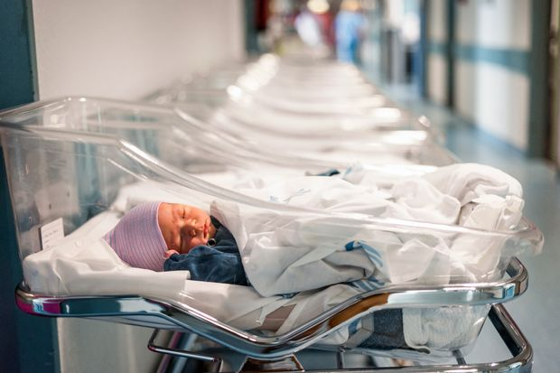 | |
| 2021-05-05 18:59:00 | Art Review | Frieze Review: The Art Fair Is Back | Frieze, the first major fair in the U.S. since the Covid-19 pandemic started, is a gratifying step toward the new normal. | New York The art fair has awoken after a year-long slumber, refreshed and full of nervous energy—while at the same time undeniably transformed. Frieze (through May 9)—the first major fair to open in the U.S. since the start of the Covid-19 pandemic—may not be a phoenix rising from lockdown ashes, Nonetheless, it remains a metamorphosed creature, recognizable in its genetic structure and immutable characteristics, but fundamentally altered, and in many ways for the better. Previously held on Randall’s Island, Frieze, known for its brand-name exhibitors and affection for the controversial and the contemporary, has moved to the Shed—the ultra-flexible, high-tech cultural center at Hudson Yards. And while the new venue may be the most obvious shift, the dozens of other changes resulting from a global health crisis are just as notable, not for their monumentality but because of their lack of it, all serving as signposts of what a return to normal might look like for art lovers and the fair circuit. As the Journal reported earlier this week, in-person exhibitors, spread across three floors, now number 60 compared with the roughly 160 in the past. (Frieze offers an online viewing room—that stopgap that fairgoers acclimated to over the past year—with about that number of galleries.) And instead of the come-and-go, browse-as-you-please tenor of previous fairs, this year’s features timed ticketing, a two-hour viewing limit, and proof of vaccination or negative test for entry. And once inside, the fair is almost paperless with maps, checklists and more provided via QR codes throughout the venue. So how does this new fair fare? Let’s get the negative out of the way first. I terribly miss the Randall’s Island experience. The ferry ride. The landscape. Picnicking outside the Frieze tent. All these marked a spring Hajj to witness the metaphorical rebirth of the natural and New York art worlds. This year, the rebirth may be more meaningful than in the past, but the chill of Hudson Yards is a far cry from the vivacious exuberance of Frieze’s earlier setting. If ever there was a year when that feeling was needed, it was this one. |
|
| 2021-05-05 18:54:00 | Opinion | Madrid Votes for Freedom | A win for the Spanish right on an anti-lockdown platform. | ||
| 2021-05-05 18:48:00 | Markets | MetLife, Allstate Post Strong Gains in Adjusted Earnings | Covid-19 pandemic’s impact on insurance industry hasn’t been as bad as feared | MetLife Inc. and Allstate Corp. posted strong gains in adjusted earnings as the insurers weathered another quarter of the Covid-19 pandemic. Allstate’s car-insurance business had a strong quarter as rush-hour fender-benders were below normal, with many Americans still working from home rather than commuting. MetLife had sharply higher death benefits on life-insurance policies while payouts on pension products and other annuities were reduced. “We believe the worst impact of the pandemic on our business performance is behind us,” MetLife Chief Executive Michel Khalaf said. The pandemic’s impact on the insurance industry hasn’t been as bad as was feared when Covid-19 cases started climbing just over a year ago. Car insurers got windfall profits as stay-at-home directives and business shutdowns left vehicles parked for days. While death claims are elevated, U.S. life insurers have paid fewer claims than initially expected per 100,000 Covid-19 fatalities, largely because the virus has disproportionately killed the elderly and other people with little or no insurance. MetLife’s net income fell 93% to $290 million, a decline primarily related to mark-to-market losses on the financial hedges it buys to protect the company from falling interest rates and stock markets. When rates and equities rise, as they did in the first quarter, the value of that protection falls. Still, MetLife’s reported results got a lift from improved market conditions. |
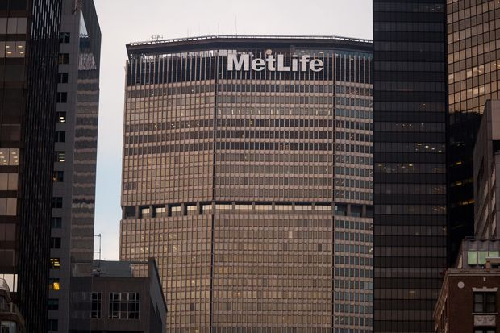 |
| 2021-05-05 18:34:00 | Risk & Compliance Journal | Privacy Chiefs Say Patchwork Data Laws Mean Lawyers Must Work Alongside Engineers | Having specialist staff involved from the start of projects eases compliance burden, executives say | ||
| 2021-05-05 17:51:00 | U.S. | U.S. Reduces Migrant Children in Border Patrol Custody, but Emergency Shelters Pose New Concerns | Amid surge in unaccompanied minors at the border, HHS shelters are opening in convention centers, army bases, camps for oil-field workers | WASHINGTON—The Biden administration in recent weeks has opened more than a dozen emergency child shelters to remove migrant children from Border Patrol custody, using convention centers, concert venues, army bases and camps built for oil-field workers to address the surge in unaccompanied minors. The shift has enabled the administration to reduce overcrowding and fulfill the legal requirement that children be moved quickly from Border Patrol custody. The new shelters, however, are prompting concern among some immigrant and child-welfare advocates that the conditions inside are unsuitable to hold children for long periods. The emergency shelters are a short-term solution while they work to open more licensed shelters, three administration officials said. U.S. Customs and Border Protection has reported record numbers of unaccompanied children crossing the southern border illegally over the past few months, with hundreds of children arriving each day to seek asylum or other protections. Under federal law, migrants under age 18 traveling without a parent must be transferred within three days of crossing the border from Border Patrol custody to a child welfare shelter overseen by the Department of Health and Human Services. Typically, the shelters are licensed by state agencies and offer children education, counseling and legal services. The children stay there while they start their immigration cases and seek a legal guardian who can take them in. To keep up with the numbers of children in HHS custody—22,174 as of Tuesday, according to the department—the administration has rushed to hire contractors and staff the more than a dozen unlicensed emergency shelters. About half of the children in HHS custody are in the shelters, where they sleep on cots and shower in mobile trailers. |
|
| 2021-05-05 17:51:00 | World | Colombia Protests Turn Deadly Amid Covid-19 Hardships | Major city sealed off by protesters, clashes claim 25 lives; government struggles to ease pandemic’s economic fallout and curb surge | BOGOTA, Colombia—Eight days of protests have left 25 people dead, a major city cut off from food supplies and Colombia’s conservative government scrambling to assert control as it fights the country’s worst Covid-19 surge. The nationwide unrest was triggered by a proposed tax-collection overhaul and stringent pandemic lockdowns that have been blamed for causing mass unemployment and throwing some four million people into poverty. Colombia is experiencing its third coronavirus surge, with nearly 500 deaths a day on average over the past week, a higher per-capita rate than India’s. “How many people haven’t lost jobs, how many haven’t lost everything,” said Ivan Felipe Gonzalez, 35, whose shoe shop has been closed and who has been protesting in Cali, a city of 2.2 million that is the country’s third largest. “The working class tries to open their doors to get some kind of business. But what happens? The law comes in and forces them to close down.” Though most protesters have marched peacefully over the past week, Colombian authorities say looters and members of drug gangs and urban units of rebel groups have infiltrated the demonstrations. One policeman was knifed to death in the middle of a protest and nearly 600 officers have been injured, the police said. Some demonstrators have also set fire to buses, mass transit stations and banks. Looters have targeted more than 200 stores, banks and automated teller machines, according to police. “With their violence, they’ve tried to cut off cities, leaving thousands without work,” President Ivan Duque said in a speech, referring to protesters who have engaged in violence. “Nothing justifies that armed people…go out and shoot at defenseless citizens and cruelly attack our police.” |
|
| 2021-05-05 17:49:00 | CFO Journal | Puma Promotes Insider to CFO as Company Projects Growth | German sportswear maker forecasts higher sales but expects uncertainty around Covid-19 and the economic recovery | ||
| 2021-05-05 17:48:00 | Opinion | Voters Can Spot Radical Left-Wing Policy | Texas’ special election shows Americans are savvy enough to not fall for the Biden spin. | 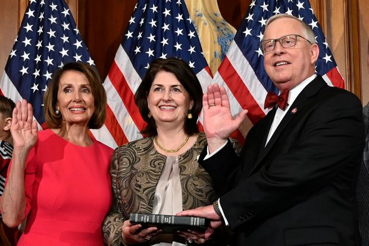 | |
| 2021-05-05 17:48:00 | Opinion | Democrats Are Killing the American Dream | Joe Biden’s American Families Plan replaces individual striving with middle class entitlements. |  |
|
| 2021-05-05 17:47:00 | Opinion | My Mom’s Christian Lesson: ‘Offer It Up’ | Her purpose was to ensure that I never let suffering go to waste. | ||
| 2021-05-05 17:46:00 | Opinion | America’s Welfare State Is on Borrowed Time | Biden has fully embraced the mad goal of giving 98% of the population lavish benefits at no cost. | 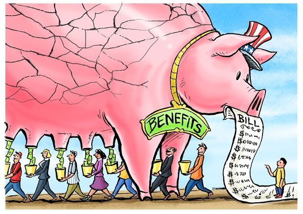 | |
| 2021-05-05 17:46:00 | Opinion | ‘Stakeholder Capitalism’ Caused the Oxford Vaccine Debacle | University scientists insisted nobody profit, and now AstraZeneca can’t meet its commitment. | ||
| 2021-05-05 17:46:00 | Books | ‘The Nine’ Review: Band of Sisters | Once they were free of the camp, their greatest threats were hunger and men. But they held fast to the belief that goodness had not disappeared. | Gwen Strauss writes movingly in her book “The Nine” about the courage and luck that enabled nine young women to escape German imprisonment during World War II and return to their homes in France and Holland. Offering incisive images of life inside concentration camps and on death marches, Ms. Strauss relies, as any skilled researcher would, on archives and interviews, but as an accomplished poet and short-story writer, she also calls on her vibrant imagination to portray the emotional and physical traumas visited upon these young women. It is this poetic sensitivity, conveyed through a transparent style, that offers readers a nuanced perspective on what took place more than 75 years ago. These nine young women—six French, two Dutch and one Spanish; one with a Jewish father, another from a Jewish family—were captured by the Gestapo, then sent to Ravensbrück, Germany’s primary concentration camp for women. Soon they were “loaned out” as laborers to a munitions plant owned by one of Germany’s largest arms manufacturers. It was there that the nine met. In the early spring of 1945, as the Allied fronts closed in from the east and west, Nazi authorities ordered the labor camps emptied, and so began the death marches across Germany. Taking bold chances, the nine women escaped from a casually monitored march and made their way into the fields and woods of Saxony. Ms. Strauss’s narrative takes place during perhaps the most violent phase of the war in Europe—its final six months—but her book transcends that period and speaks to the humanity of all who are oppressed. “The Nine” is defined by examples of solidarity, empathy and perseverance. As they searched for color in a barren landscape, the women held fast to the belief that goodness had not disappeared. Ms. Strauss is careful to identify geographical markers so that, with the help of a good map, a reader can trace the women’s long trek home. And the author is astute in keeping us mindful of the weather that a rude spring visited upon them. Her meticulous descriptions of the social and surveillance conditions in the horrific camps—gender and racial hierarchies, the treatment of ill and pregnant women, the murderous use of the dreaded daily roll call where dozens would faint or fall and be immediately executed—form the foreground of this narrative of unfathomable courage. All nine women had been arrested for acts of resistance or for nonviolent political activities while still in their 20s. In fact, it was their youth and good health that allowed them to survive the devastating abuse their bodies would endure before and during their escape. The fugitives traversed a no-woman’s-land of a battered nation, filled with suspicious and resentful inhabitants. Once free of the camp, the greatest threats of their odyssey were hunger and men. Finding potatoes, raw or—less frequently—cooked, is a recurrent theme that encapsulates the anthropology of concentration camps and forced marches. Hunger hung persistently over the lives of the group. They never knew, when they knocked on a farmer’s door, whether they would be chased away or given a good meal. Men are generally depicted as at best indifferent to these women’s plights or, at worst, brutally abusive. The constant fear of being raped, beaten or murdered weakened them as much as their physical distress. |
|
| 2021-05-05 17:45:00 | Opinion | Rural America Gets Bad Vibrations From Big Wind | Turbines are popular so long as no one has to see their giant blades or hear the awful noise they make. | ||
| 2021-05-05 17:43:00 | Business | Fox to Acquire Clay Travis’s Outkick Media, a Sports and Culture News Site | Deal announced as Fox reports a 6.5% drop in revenue for the March quarter | Fox Corp. said it agreed to acquire Outkick Media, a news outlet focused on sports, politics and culture that was founded by provocateur Clay Travis. While best known for its irreverent takes on sports news, in recent years Outkick Media has featured more content focused on political and social issues, often with a right-leaning viewpoint that is in sync with Fox News opinion programming. Fox Corp. and Outkick Media already have ties. Fox Sports Radio is the home of Mr. Travis’s national daily broadcast. In addition, Mr. Travis is a regular on the Fox Sports 1 cable channel. “Clay and his team have quickly made Outkick a content powerhouse with a very large, loyal and engaged audience. We expect the synergies presented across FOX’s existing portfolio of assets will turbocharge this exciting business,” said Fox Corp. Executive Chairman and Chief Executive Lachlan Murdoch Outkick Media is jointly owned by Mr. Travis and Savage Ventures, which will continue to have a role in operations going forward. Mr. Travis will serve as president of Outkick Media. |
|
| 2021-05-05 17:40:00 | Politics | National Eviction Moratorium Thrown Out by Federal Judge | Judge Dabney Friedrich says CDC exceeded its authority with ban on evictions for tenants behind on rent during Covid-19 pandemic | WASHINGTON—A federal judge threw out a national eviction moratorium Wednesday after concluding it was legally unsupportable, upending a Covid-19 relief measure that has protected millions of tenants but created hardships for landlords. The Centers for Disease Control and Prevention, citing public health grounds, had extended the moratorium through June for tenants who have fallen behind on their rent during the pandemic. But a series of conflicting lower-court rulings had previously called into question the measure’s legality, and Wednesday’s decision is perhaps the biggest blow to Washington’s efforts to provide eviction protections. The moratorium originated from an executive order signed by then-President Donald Trump in September. Judge Dabney Friedrich of the U.S. District Court for the District of Columbia said that while it was the role of the political branches of government to address the pandemic, current federal law on public health didn’t give the CDC broad authority to impose the moratorium. “Because the plain language of the Public Health Service Act unambiguously forecloses the nationwide eviction moratorium, the court must set aside the CDC order,” Judge Friedrich wrote. The judge, a Trump appointee, set aside the moratorium on a nationwide basis, rejecting a Justice Department request that any adverse ruling apply only to the housing providers and Realtors associations who brought the case. |
|
| 2021-05-05 17:39:00 | Opera Review | ‘The Road We Came’ and ‘Greenwood Overcomes’ Reviews: Commemorating Black History and Artistry | Three virtual walking tours from On Site Opera explore Black music and history in New York; the Tulsa Opera pays tribute in song to the centennial of the 1921 Tulsa Race Massacre. | New York In normal times, On Site Opera stages works in locations that relate to their subject matter. With “The Road We Came,” an ambitious project designed for abnormal times, the company has instead used music and technology to illuminate the rich history that is buried in familiar places. Three self-guided walking tours trace the experience of Black people in New York, starting in Lower Manhattan in the 17th century; moving north to Midtown in the late 19th century; and then up to Harlem in the 20th century. Each of the 16 tour stops has a narration by historian Eric K. Washington and a short film by Ryan and Tonya McKinny in which bass-baritone Kenneth Overton, accompanied by pianist Kevin J. Miller, sings music by (mostly) Black composers. Accessed through a dedicated app, the tours are $60 each; all three are $165. These fascinating journeys can be taken virtually or in person; I walked the Lower Manhattan route on a windy Friday afternoon. It’s a hike—3.1miles, according to the app—and it took two hours, rather than the estimated 90 minutes, to do the walk and take in all the filmed and recorded content at each of the five stops. The tour begins at the African Burial Ground on Duane Street, a somber monument in water and stone to the thousands buried there between the 1690s and 1794; Mr. Overton’s rendition of William Grant Still’s plaintive “Grief” is a fitting accompaniment. The next site, a plaque in Tribeca marking a stop on the Underground Railroad, gets a fiercer song: “Oh Say, Do You Hear? (Abolitionist National Anthem),” with E.A. Atlee’s graphic text about whipped and bloodied bodies set to the tune better known as “The Star-Spangled Banner.” |
|
| 2021-05-05 17:29:00 | Business | Peloton Recalls All Treadmills as CEO Apologizes | Home-fitness company offers customers refunds, halts sales of Tread+ machine | Peloton Interactive Inc. has agreed to recall its treadmills, and its chief executive apologized for the company’s initial refusal to comply with federal safety regulators who pushed for the action weeks ago. The exercise-equipment maker also said it was halting sales of its Tread+ treadmill model. “I want to be clear, Peloton made a mistake in our initial response to the Consumer Product Safety Commission’s request that we recall the Tread+,” CEO John Foley said in a joint statement announcing the recall with the CPSC. “We should have engaged more productively with them from the outset.” The CPSC told people with young children or pets in mid-April to stop using the Tread+ and urged a recall of the product, which it says was responsible for dozens of injuries and at least one death. The known death is that of a 6-year-old who was pulled under the rear of one of the machines, the federal agency said. Peloton rebuffed calls for a recall initially. Mr. Foley, in statements posted last month on the company’s website, called the CPSC advisory inaccurate and misleading, and said the treadmills are safe when users follow safety recommendations. |
|
| 2021-05-05 17:16:00 | Life & Arts | Bill and Melinda Gates Divorce Highlights Rise of Older-Age Splits | Divorce rates among couples over 50—sometimes called ‘gray divorce’— have risen despite an overall decline. Some counselors expect soul-searching during the pandemic to accelerate the trend. | Bill and Melinda Gates aren’t like most couples. But their split highlights a broader phenomenon in American relationships. Divorce after the age of 50, often called “gray divorce,” has risen in recent decades, bucking an overall decline in divorce among younger couples. The reasons for older-age divorces are often different than for younger ones: It’s not necessarily acute conflict, but rather starting a new chapter—the children leave home, or retirement feels closer—that prompts reassessment in a marriage, counselors say. And people living healthier lives at older ages means they have more time to start over in a second act. During the past year, many couples stuck it out as they hunkered down in crisis, but lawyers say they expect more split-ups among all age groups as the pandemic recedes. For couples over 50 in particular, counselors say, the pandemic has amplified the soul-searching that often hits people at this age. Before Covid, empty-nesters or new retirees had other activities to distract them from an unfulfilling relationship, says Susan Brown, a professor of sociology at Bowling Green State University who studies marriages and divorce. “The pandemic made them think differently about their own mortality and goals in life, what they are willing to accept and not accept,” says Dr. Brown. “People are less willing to stay in these empty-shell marriages that are not conflictual, but also not happy.” Longer, healthier lifespans are also playing a role, says Jocelyn Elise Crowley, professor of public policy at Rutgers University and author of a book on gray divorce. “We have better access to medical care, the quality of lives in terms of overall health is improving,” she says. The sense of duty to marriage prevalent in previous generations is less pervasive now, she adds. |
|
| 2021-05-05 17:12:00 | Politics | GameStop Frenzy, Archegos Meltdown May Prompt New SEC Rules, Chairman Says | Gary Gensler is set to testify Thursday before House Financial Services Committee | WASHINGTON—Wall Street’s top regulator will study potential new rules related to two recent episodes of stock-market turbulence—the GameStop Corp. frenzy among small investors and the implosion of Archegos Capital Management. In testimony prepared for the House Financial Services Committee, Securities and Exchange Commission Chairman Gary Gensler says applications that “gamify” trading—by using appealing visual graphics to reward a user’s decision to trade—might encourage frequent trading that results in worse outcomes for investors. Some Democratic lawmakers have blamed gamification for the boom in retail trading that helped drive the rise in GameStop shares. Mr. Gensler, who is expected to appear Thursday before lawmakers, also says in the prepared testimony that the SEC will study regulatory changes in response to the March blowup of Archegos, an unregulated family-investment vehicle of hedge-fund veteran Bill Hwang whose leverage-fueled bets led to more than $10 billion in losses at top global banks. In his remarks on gamification, Mr. Gensler suggests that many investor-protection rules were written before trading moved to online platforms that have grown more visually enticing and are sometimes blamed for encouraging investors to trade more. The hearing was scheduled after a boom in individual trading drove the prices of several stocks, including those of GameStop and AMC Entertainment Holdings Inc., far above where they traded in December. “Many of our regulations were largely written before these recent technologies and communication practices became prevalent,” Mr. Gensler is set to say. “I think we need to evaluate our rules, and we may find that we need to freshen up our rule set.” |
|
| 2021-05-05 16:42:00 | Opinion | Resisting Arrest Raises Chance of Problems | Advocating for more compliance in communities that experience a majority of police encounters is cheaper than ensuring competent law enforcement. |  |
|
| 2021-05-05 16:41:00 | Opinion | Government Should Help U.S. Chip Industry | Leaders in Washington from across the political spectrum agree government must not simply turn its back on chips and hope for the best. | ||
| 2021-05-05 16:40:00 | Opinion | States Should Think Twice Before a Boycott | Why should Texas and the other 11 blacklisted states not agree among themselves to coordinate a response? | ||
| 2021-05-05 16:39:00 | Business | U.S. Backs Waiver of Intellectual Property Protection for Covid-19 Vaccines | Biden administration supports WTO proposal aimed at speeding up global vaccine production | WASHINGTON—The Biden administration said it would back a proposal at the World Trade Organization to waive intellectual property protections for Covid-19 vaccines to help speed up global production. Developing nations led by India and South Africa have been pushing for the waiver, saying it is needed to stem the coronavirus pandemic. More than 100 members of Congress also support the waiver. Pharmaceutical companies and other business groups have opposed the move, saying it wouldn’t solve supply-production problems in the short term because contract producers lack certain necessary technical knowledge. U.S. Trade Representative Katherine Tai said the administration based its decision on the pandemic’s extraordinary circumstances. “The administration believes strongly in intellectual property protections but, in service of ending this pandemic, supports the waiver of those protections for Covid-19 vaccines,” Ms. Tai said. |
|
| 2021-05-05 16:34:00 | Deals | Hellman & Friedman Nears Deal to Buy At Home Group | Deal would value home-decor retailer in mid-$30s a share | Private-equity firm Hellman & Friedman LLC is nearing a deal to buy At Home Group Inc., according to people familiar with the matter, in a move that would take the home-decor retailer private. A deal, which would value At Home Group in the mid-$30s a share, could be inked as soon as Thursday, assuming the two sides reach a final agreement, the people said. At Home shares were trading at $31.15 Wednesday afternoon, giving the Plano, Texas, company a market value of around $2 billion. At Home sells furniture, décor and other home goods like bedding and seasonal decorations in stores around the country. The stock tumbled along with much of the market in the early days of the pandemic but has since recovered, as homebound consumers spend more time fixing up their surroundings. Chief Executive Lewis Bird said on a recent earnings call that the company has benefited as consumers continue to decorate, organize their homes and spend more time in their kitchens. Private-equity firms have been active lately, both selling companies they own and eyeing larger leveraged buyouts as they look to spend record levels of cash in a pricey market. They are also giving investors the opportunity to directly invest in target companies and avoid fund fees, which means the buyout firms have even more capacity for deals than it at first appears. |
 |
| 2021-05-05 16:33:00 | Markets | Jessica Alba’s Honest Co. Jumps in Market Debut | Shares of the consumer-goods company rise 44% to $23, valuing it at $2.68 billion | Shares of Honest Co. , the eco-friendly consumer-goods business co-founded by actress Jessica Alba, rose nearly 44% in their first public trading on Wednesday. Honest’s shares closed at $23, putting a value on the company of $2.68 billion. The initial public offering price was $16. The Los Angeles company specializes in baby products such as diapers, clothes, bath items and skin care, as well as household products and face masks. Honest’s shares are listed on the Nasdaq Stock Market under the symbol HNST. The IPO handed Honest more than $100 million, which the company plans to use for expanding its product lines and geographic reach. Honest’s share of the natural products market in the U.S. is less than 5%, according to the company. |
|
| 2021-05-05 16:27:00 | Politics | How Elise Stefanik Rose to Cusp of GOP Leadership | New York lawmaker defended President Trump during his first impeachment and now has his backing to succeed Trump critic Liz Cheney as Republican Conference chairwoman | 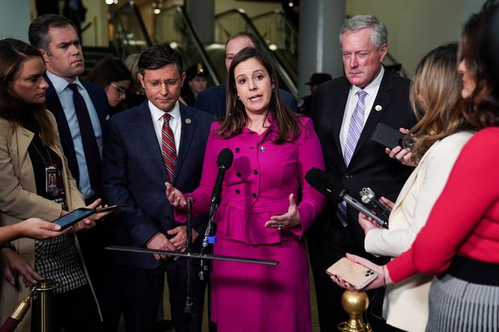 | |
| 2021-05-05 16:14:00 | Tech | Uber’s First Quarter Shows Food Delivery’s Continuing Strength | Uber Eats now accounts for nearly two-thirds of total bookings | Uber Technologies Inc.’s first-quarter bookings rose despite weak demand for its ride-sharing service, as sustained growth in its food-delivery business offset the slump in its core operations. Uber’s gross bookings grew 24% year-over-year to $19.5 billion in the three months ended March, of which $12.5 billion came from its food-delivery arm. Uber Eats’ bookings more than doubled from a year earlier, while Uber’s ride business declined 38% over the same period. Even though Uber’s total bookings grew and beat analyst forecasts, its overall revenue declined because of an adjustment tied to a driver reclassification dispute in the U.K. The company reported revenue of $2.9 billion after setting aside $600 million tied to the reclassification. That compares with revenue of $3.2 billion in the same period last year. In March—after losing a monthslong legal battle—Uber granted its U.K. drivers an employment status entitling them to vacation pay and pension contributions. While Uber won a major reclassification dispute in its home state of California late last year, regulatory challenges are far from over. The Biden administration said earlier Wednesday it would block a Trump-era proposal that sought to make it easier for Uber and others to continue classifying gig workers as independent contractors. The move maintains the status quo, meaning Uber doesn’t need to change its labor model. But the current administration’s stance may add to regulatory snares down the road. |
|
| 2021-05-05 16:03:00 | Life & Arts | What We’re Not Supposed to Say When We Talk About Wine | ‘Hate’ is a contentious word—and, our columnist maintains, occasionally the appropriate one to describe her reaction to a wine. Just how frank can we be when it comes to matters of taste? | AS A CHILD I was told I should never use the word “hate,” even to describe a thing I truly despised. According to my mild-tempered schoolteacher mother, there simply was never an occasion where such a harsh and terrible word could acceptably be invoked. To which I’d now reply: Have you ever tasted Pinotage? On more than one occasion I’ve publicly declared my animus toward this red grape from South Africa that tastes and smells like rubber tires. And each time I’ve been on the receiving end of some, well, pretty hateful responses. Apparently, many wine lovers consider it unseemly to express hatred for a particular wine; if you intensely dislike it, that just means you haven’t had the “right” one. Yet people feel free to say they hate other things—paint colors, hair styles. Why not wine? When I revealed my hatred of Pinotage in this column several years ago after tasting many, many examples, I received a raft of emails from readers. In one notably long missive, grape grower Dave Jefferson of Kenwood, Calif., wrote, “A more prejudicial statement by a wine journalist can scarcely be imagined. A wine journalist is not entitled to any such prejudices in their professional field.” Other correspondents shared my anti-Pinotage stance and voiced their support. Yet another put forward a strategy to combat the wine’s malodorous nature. Reader Pierre Bedard suggested decanting a Pinotage for an extended period. “The foul aromas will decamp and new ones will form,” he promised. To my mind, the fact that “foul aromas” need to be dispersed says everything you need to know about Pinotage. I’ve discovered that some of my otherwise wine-loving friends have antipathies of their own toward particular wines. My friend Kathy, for instance, has a longstanding hatred of rosé. I have tried many times to change her mind about what I regard as a deeply irrational position. How could someone hate a wine on account of its color? “I think rosé is really boring,” Kathy explained. “It never surprises me.” Over the course of decades I’ve served Kathy many rosés I love. Once I even blindfolded her before serving her a favorite Crémant d’Alsace rosé—hoping to appeal to her love of sparkling wine—but to no avail. |
|
| 2021-05-05 16:02:00 | A Closer Look | Selections from ‘If I Were a Dog’ by Joanna Cotler | |||
| 2021-05-05 16:00:00 | Opinion | A Political Venture at the Fed | A regional bank president puts his institution behind a controversial plan for schools. | 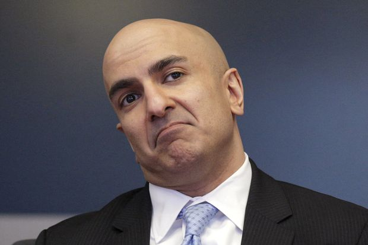 | |
| 2021-05-05 15:42:00 | Tech | Google Adopts Hybrid Workweek, With 20% of Its Employees to Work Remotely | About 20% of staff will be able to work from home and 20% can shift offices | Alphabet Inc.’s Google announced a series of moves to offer employees more workplace flexibility, allowing a fifth of its staff to work from home permanently and another fifth of workers to shift to a different geographic location. In an email on Wednesday, Alphabet Chief Executive Sundar Pichai said the company envisions that about 20% of staff would work from home on a permanent basis, while another 20% of staff would shift to new offices. The remaining 60% of staff will work from their current location. Employees will have to apply for both location-change options, with approval being up to their managers. Google is also moving to a hybrid workweek, where employees work from offices about three days a week, and two days “wherever they work best,” Mr. Pichai said in the email. The company also will offer four weeks per year where staff can work from anywhere with manager approval, a move that aims to give employees more flexibility around summer and holiday travel. “The future of work is flexibility,” Mr. Pichai said. He said the changes aimed to help staff do their best work. |
 |
| 2021-05-05 15:11:00 | Screen Time | What to Watch: 12 Movies and Series to Stream This Week | Peacock’s ‘Girls5Eva’ brings back the ‘90s; AppleTV+’s workplace comedy ‘Mythic Quest’ returns for a second season and ‘Star Wars’ latest animated installment arrives on Disney+ | After spending years as a fixture in the writers’ room at “Saturday Night Live” and (mostly) out of the public eye, Paula Pell has become a regular in front of the camera. She is a series regular on “A.P. Bio” (Peacock), appeared in two episodes of “No Activity” (Paramount+), and last year she played a Jessica Fletcher-esque novelist/sleuth in “Mapleworth Murders,” a series on the now-defunct Quibi. This week she co-stars in the new series “Girls5eva” (see below). Here’s what else is streaming this week: ( Apple TV+) Rob McElhenney runs an old show and a new show. The old one is “It’s Always Sunny in Philadelphia” (Hulu), about a group of friends who run a bar and which, 14 seasons deep, is currently tied with “The Adventures of Ozzie and Harriet” as the longest-running live-action sitcom in U.S. history. Mr. McElhenney calls the dark comedy “a show about people who never grow or learn anything or will ever change and evolve.” The new one, “Mythic Quest,” is a workplace comedy that does almost the opposite: It’s about a company that makes video games where change, learning and being there for each other are central to the premise of the show. The second season, which takes place as the company returns to the office after working remotely during the pandemic, begins streaming Friday on Apple TV+. |
|
| 2021-05-05 14:54:00 | Tech | For Better Burgers, Try a Backyard Flat-Top Griddle | If you want superior flavor faster, some patty professionals say skip the grill and reach for a flat expanse of ripping hot steel. | WHEN GEORGE MOTZ set out to track down the best burger restaurant in all 50 states for his 2018 book “Hamburger America,” he expected to taste test beef that had been branded with a grill’s sear marks. “When I was a kid, my dad made backyard burgers on the grill, so I assumed everything in restaurants was like that,” he said. In fact, 182 of the 200 restaurants he ultimately featured as “America’s best” use a flat-top griddle, not a grill, to finesse their patties. Whether they know it or not, many Americans have been raised largely on griddled burgers—from their first Happy Meal to the more grown-up tastes of Shake Shack, Five Guys or the sliders from their local diners. Yet, come Memorial Day, most backyard cooks still kick off burger season by firing up their grills. Is it time to invest in a stand-alone griddle, or at least a griddle attachment for your regular grill? For the standard, grocery-size patties many home cooks use—about ¼ pound—meat masters say that flap tops yield a more reliably delicious burger faster than their ridged counterparts. While grills let fat drip down through the grates, sapping moisture from the meat, griddles fry patties in their own juices. Result: a tasty, uniformly brown coating (food geeks call it the Maillard reaction) with an extra-flavorful crust. Griddles are also arguably safer to use than grills, since there’s no risk of being singed by open flames. These days, more backyard cooks are getting the message. Outdoor-cooking company Camp Chef has seen a “significant increase” in sales since 2019 and, along with other stalwart brands, has recently introduced new models to keep up with demand. While flat-top attachments can go over any heat source, including charcoal, stand-alone griddles have one-to-six burners underneath their surface that rely on the same propane tank that fuels your gas grill. Released earlier this year, the Blackstone Culinary Pro 28-Inch Cabinet Griddle is the size of a typical gas grill and can accommodate about 30 patties. Unlike open-air griddles in burger joints, it comes with a lid to guarantee your cheeseburger’s topping melts. Also included is a built-in, four-quart air fryer for cooking up carby companion fries ($500, lowes.com). |
|
| 2021-05-05 14:49:00 | Life & Arts | Top Colleges in the Midwest for Diversity | Six of the region’s top 10 schools in this category in the WSJ/THE College Rankings are in Chicago. | Six of the top 10 Midwestern schools for diversity in the Wall Street Journal/Times Higher Education College Rankings are in Chicago, and two more are elsewhere in Illinois. The University of Illinois at Chicago is ranked highest in the region for diversity, at No. 13 nationwide. Three other Midwestern schools are among the top 50 in the country for diversity: the Illinois Institute of Technology at No. 28, Andrews University at No. 34 and North Park University at No. 48. In the WSJ/THE rankings, diversity accounts for 10% of a school’s overall score. The overall ranking is based on 15 factors across four main categories: Forty percent of each school’s overall score comes from student outcomes, including measures of graduate salaries and debt burdens, 30% from the school’s academic resources, including how much it spends on teaching, 20% from how well it engages its students and 10% from its environment, a measure of the diversity of its students and staff. Among the top 10 Midwestern schools for diversity, the University of Chicago is ranked highest overall, at No. 14 nationwide, followed by the University of Illinois at Urbana-Champaign, at No. 43. See the full list of top Midwestern schools for diversity below. You can also see the top schools for diversity in the South here, the Northeast here and the West here. For Midwestern schools, you can see the leading small, midsize and large colleges here, the top public and private schools here and the highest-ranked schools for academic resources here. |
|
| 2021-05-05 14:06:00 | Risk & Compliance Journal | Carson Block Calls for Delisting of Many Chinese Firms in U.S. | ‘We have…roughly 400 companies from China listed in the U.S. that are literally beyond the reach of investigation and enforcement,’ the short seller said |  |
|
| 2021-05-05 13:57:00 | World | Israel’s Yair Lapid Handed Mandate to Form New Government After Netanyahu Fails | Centrist politician has four weeks to form an administration, with prospect of another election looming | TEL AVIV—Israel’s president has handed centrist politician Yair Lapid a shot at forming a government after Prime Minister Benjamin Netanyahu failed to do so, stirring anticipation that Israel’s longest-serving leader could soon be out of power after 15 years in office. The outcome is uncertain, however. Mr. Lapid faces a difficult task in stitching together a government from a group of rivals across the political spectrum over the next four weeks. Some are united only in their desire to replace Mr. Netanyahu, who is on trial for corruption. He denies any wrongdoing. Mr. Netanyahu faced similar problems after March’s national election. He had hoped to win back defectors or persuade right-wing partners to form a government with the support of an Islamist party before his mandate expired at midnight on Tuesday. If Mr. Lapid also fails, then President Reuven Rivlin would hand responsibility for selecting a new prime minister back to Israel’s parliament before a new election is called, which would be the country’s fifth since 2019. Mr. Lapid’s prospects may have been enhanced by Mr. Netanyahu’s failure to win back some of his previous supporters, political analysts said. On Wednesday, Mr. Lapid was already talking up his prospective administration as a broad-based, national government. The groups he aims to win over span the spectrum of right-wing, left-wing, religious, secular and, potentially, Arab parties, the latter of which likely would be needed to prop up a minority administration in parliament. |
|
| 2021-05-05 13:23:00 | World | Canada Authorizes Pfizer-BioNTech Covid-19 Vaccine for Children 12 to 15 Years Old | The U.S. and Europe are considering requests to allow the shot to be administered to younger people | OTTAWA—Canada authorized the use of the Pfizer-BioNTech Covid-19 vaccine for adolescents, moving ahead of the U.S. Food and Drug Administration and making it the first Western economy to permit the vaccine’s use in individuals under 16 years of age. Health Canada said its authorization means children between the ages of 12 and 15 will be able to receive the Pfizer-BioNTech vaccine. It didn’t provide a timeline for when the two-dose shot would become available to that age group. The Covid-19 vaccine developed by Pfizer Inc. and BioNTech SE was found to be 100% effective in protecting against symptomatic disease in a study of more than 2,200 children, the companies said in late March. Researchers didn’t find any safety concerns. Canadian officials said they reviewed the study’s results in making their decision. “After completing a thorough and independent scientific review of the evidence, the department determined the vaccine is safe and effective when used in this younger age group,” said Dr. Supriya Sharma, senior medical adviser at Health Canada. The FDA is considering a request for authorization of the Pfizer-BioNTech vaccine for adolescents, which could make the vaccine available to children in the coming weeks. Regulators in Europe are also reviewing a request to authorize the vaccine for children. |
|
| 2021-05-05 13:13:00 | Life & Arts | Pigeon Peas and Rice With Roasted Okra and Tomato Vinaigrette | The comforting combination of pigeon peas and rice gets a little crunch from roasted okra and a nice tangy twang from a bright tomato vinaigrette. | To explore and search through all our recipes, check out the new WSJ Recipes page. | |
| 2021-05-05 13:10:00 | Life & Arts | A Lighter, Brighter Recipe for Beans and Rice | The comforting combination of pigeon peas and rice gets a little crunch from roasted okra and a nice tangy twang from a bright tomato vinaigrette. | THE CLASSIC COMBO of beans and rice comes in many delicious iterations. When Los Angeles chef Rashida Holmes was growing up, pigeon peas were the legume of choice, as they are for many families with roots in Barbados. “We had them for every holiday,” said the chef. In the warmer months, her mother often added okra and tomatoes to the meal, as Ms. Holmes does here in her third Slow Food Fast recipe. “Some people make theirs so the rice is fluffy,” Ms. Holmes said. “I like mine a little more soupy, but you can do what you prefer and adjust the amount of water.” She cooks the okra separately, split lengthwise, tossed in olive oil and roasted until crunchy. This way, it adds a nice textural counterpoint to the pigeon peas and rice. “You don’t need to worry about it being slimy. It just gets meaty and crisp,” she said. Just before serving, Ms. Holmes mixes up a tangy vinaigrette of grated tomato, olive oil and salt. Spooned overtop, it brightens the entire dish. —Kitty Greenwald is a chef, food writer and the co-author of ‘Slow Fires’ (Clarkson Potter) To explore and search through all our recipes, check out the new WSJ Recipes page. |
|
| 2021-05-05 12:54:00 | Politics | Trump Justice Department Obstruction Memo Must Be Released, Judge Orders | Federal judge says agency improperly characterized as privileged a 2019 memo recommending against prosecuting Trump for obstruction of justice | WASHINGTON—A federal judge ordered the Justice Department to release a 2019 legal memo recommending that former President Donald Trump not be prosecuted for obstruction of justice in connection with the special counsel’s Russia investigation. In a 35-page ruling, U.S. District Judge Amy Berman Jackson described the Justice Department under Attorney General William Barr as providing “misleading and incomplete explanations” by withholding parts of the March 24, 2019, memo. In that document, two senior Justice Department officials said they had evaluated special counsel Robert Mueller’s report and concluded that the evidence wasn’t sufficient to support a conclusion that Mr. Trump had obstructed justice beyond a reasonable doubt. Mr. Barr sent a letter to Congress that same day saying that Mr. Mueller didn’t draw a conclusion on whether Mr. Trump obstructed justice, and that he had concluded, in the absence of a determination, that Mr. Trump’s actions didn’t reach the bar of a crime. “Not only was the Attorney General being disingenuous then, but DOJ has been disingenuous to this Court,” Judge Jackson wrote in the new opinion, giving the government until May 17 to file any motion to delay the release of the full memo as ordered. Mr. Barr and a spokesman for the Justice Department declined to comment on the ruling. |
|
| 2021-05-05 12:52:00 | Business | Some CEOs Suggest Dropping Degree Requirements in Hiring | Merck CEO and former IBM CEO say removing conventional requirements for some jobs can diversify talent pools | Millions of jobs requiring a four-year college degree can be done without that level of education, some corporate leaders say. To address inequalities in business and society, some executives suggest that companies shake up their approach to hiring and consider unconventional candidates. Black Americans in particular are often left unprepared by the U.S. education system, and companies could help by hiring workers without a degree and giving them training, Kenneth Frazier, CEO of Merck & Co., said Tuesday at The Wall Street Journal’s CEO Council Summit. “It’s really important for us to recognize that because people haven’t had an opportunity early in their lives, it doesn’t mean that they can’t make a real contribution to your company,” Mr. Frazier said. “We want to just recognize that, in some ways, this is a harder population, but, at the same time, if we’re committed to being the kind of country that we want to be, then this is something that business has to be willing to do.” Mr. Frazier, with a coalition of dozens of other business leaders, including former International Business Machines Corp. Chief Executive Virginia Rometty, launched a startup last year called OneTen, aiming to create one million jobs for Black Americans over the next 10 years. He and Ms. Rometty called on companies to re-evaluate their hiring criteria. Otherwise, “you will never fix this economic opportunity issue,” Ms. Rometty said. |
|
| 2021-05-05 12:20:00 | Markets | GM Shows Up Ford | The largest Detroit car maker seems to be cruising through the chip crisis without as many problems as its peers, but it is already an investor darling | ||
| 2021-05-05 12:20:00 | Logistics Report | Maersk Posts Record Profit, Steps Up Buyback Program | Danish container-shipping giant launched a new $5 billion share buyback program; ‘It’s been our best quarter ever,’ CEO says | ||
| 2021-05-05 12:01:00 | U.S. | Births in U.S. Drop to Levels Not Seen Since 1979 | Millennials fuel continued downward trend in fertility rates | The number of babies born in America last year was the lowest in more than four decades, according to federal figures released Wednesday that show a continuing U.S. fertility slump. U.S. women had about 3.61 million babies in 2020, down 4% from the prior year, provisional data from the Centers for Disease Control and Prevention’s National Center for Health Statistics shows. The total fertility rate—a snapshot of the average number of babies a woman would have over her lifetime—fell to 1.64. That was the lowest rate on record since the government began tracking it in the 1930s, and likely before that when families were larger, said report co-author Brady Hamilton. Total births were the lowest since 1979. Because the Covid-19 pandemic emerged in March, the figures capture just a short period at year’s end when the unfolding health and economic crisis could be reflected in women’s decisions about getting pregnant. Women typically have fewer babies when the economy weakens. Fears of getting sick, making medical appointments and delivering a baby as a deadly virus spread also dissuaded some women from pregnancy. “The fact that you had this coincide with the time the pandemic hit is certainly cause for suspicion,” said Dr. Hamilton, a federal statistician and demographer. He added that it was too soon to gauge the exact impact of the pandemic on fertility. Demographers say the data suggests that more fundamental social and economic shifts are driving down fertility. Births peaked in 2007 before plunging during the recession that began that year. Although fertility usually rebounds alongside an improving economy, U.S. births fell in all but one year as the economy grew from 2009 until early 2020. |
|
| 2021-05-05 12:01:00 | Markets | Yellen’s Interest-Rate Comment Illustrates the Market’s Greatest Worry | The possibility of a bond-market tantrum or higher inflation has supplanted pandemic-related concerns | During earnings season in the middle of a pandemic, there would seem to be no shortage of things for investors to fret about. Could a new variant of the virus knock markets? Or negative guidance from a major American company reset earnings expectations? Perhaps not. An offhand comment by Treasury Secretary Janet Yellenabout interest rates on Tuesday revealed what is fueling market sentiment, to the exception of almost anything else. Speaking at an event with the Atlantic, Ms. Yellen said, “It may be that interest rates will have to rise somewhat to make sure that our economy doesn’t overheat, even though the additional spending is relatively small relative to the size of the economy.” She was referring in particular to the Biden administration’s planned long-term spending, some of it years down the line, when the economy will probably be much closer to full employment. To be sure, the market was already down for the day when the Treasury Secretary’s comments hit the wires, but it’s telling that such an anodyne remark—by someone who knows very well the clear demarcation between Federal Reserve and Treasury policy—could deliver such a jolt. Ms. Yellen walked back her comments later, at The Wall Street Journal’s CEO Council Summit. How the Fed reacts to the economic recovery and the administration’s bulging spending plans isn’t all that matters, but it sometimes seems like investors believe that it is. Chairman Jerome Powell has repeatedly stressed that the Fed intends to sit on its hands and allow inflation to stray marginally above 2% without acting to cool the economy. |
|
| 2021-05-05 11:44:00 | Life & Arts | How to ‘Travel’ to Japan This Summer | We can’t attend the Olympic Games in Tokyo, but with these book, food and film recommendations from locals, we can immerse ourselves in the city and the culture. Plus: an ‘intensely embarrassing’ reality dating show. | JAPAN’S THRUMMING capital—with more than 37 million people in the greater metropolitan area—was devastatingly quiet much of last year. The neon-bright wards of Shibuya and Shinjuku dimmed for months when the thousands of tiny shops and giant department stores temporarily closed or slashed their hours. Throughout the city, parishioners carrying portable shrines stopped dancing shoulder-to-shoulder in the streets. A favorite late-night snack—ice-cold beers with a side of fried chicken—was mostly consumed at home. Now, amid the vaccine rollout, Tokyo has been busily preparing to host the postponed Olympics starting July 23. Yet officials implemented the third citywide lockdown in late April in an effort to contain infection from new Covid-19 variants, and the country’s borders remain closed to foreign visitors, with a reopening date still uncertain. In June, authorities will announce whether locals can attend the games in person. The only upside: Frustrated travelers might count themselves lucky to avoid a sweltering summer in Tokyo. No handkerchief is large enough to soak up sweat from humidity that descends from the Pacific Ocean’s southerly winds. Yet the city’s steamy season does have its virtues: countless outdoor festivals, humongous hydrangeas in the parks, nighttime visits to temples adorned with lanterns, the soundtrack of jazz bands on the streets, even the cicadas perform day and night. Thanks to a few clued-in residents, we’ve come up with myriad ways to approximate summer in the multifarious metropolis, while watching the Olympics in air-conditioned comfort. From historical fiction to a graphic novel, 4 perspectives on this complex capital The author of this 1914 novel was born in 1867, when Tokyo was still called Edo. It’s a story of a young man and his friendship with a teacher set against Japan’s transition from the Meiji period into the modern era. This is a darkly comic story about a misfit who finds meaning in a mundane job. It’s a quick read and offers inimitable insights into social conformity. Little has changed in Tokyo’s Yotsuya neighborhood, where Haruki Murakami set much of this novel about coming of age in the 1960s. Cherry blossom trees still line train tracks. College students still crowd the sidewalk. The author’s observations about a young man’s first hopeless love are timeless, too. |
 |
| 2021-05-05 11:10:00 | Business | Bill Gates’s Firm Transferred $1.8 Billion in Stock to Melinda Gates Amid Divorce | AutoNation, Canadian National Railway shares changed hands this week | An investment firm controlled by Bill Gates transferred stock worth more than $1.8 billion to Melinda Gates this week, when the billionaire philanthropists announced that they were ending their 27-year marriage. The firm, Cascade Investment LLC, transferred to Ms. Gates more than 14 million shares of Canadian National Railway Co. , and more than 2.9 million shares of AutoNation Inc. on Monday, according to regulatory filings. As trading began Wednesday, the Canadian National Railway shares were worth about $1.53 billion, while the AutoNation shares were worth about $310.1 million. The transfers come as one of the world’s wealthiest couples parts ways. The couple’s divorce petition filed Monday in King County Superior Court in Washington state indicated that they have a separation agreement under which they plan to divide their assets. Cascade manages a large portion of the wealth that Mr. Gates amassed as co-founder and longtime leader of Microsoft Corp. Mr. Gates, who co-founded Microsoft in 1975, stepped down as its chief executive in 2000 and departed from his role as chairman in 2014. Cascade Investment didn’t immediately respond to a request for comment. Despite their plans for divorce, Mr. Gates and Ms. Gates, who was born Melinda French, have said they would continue to work together at the Bill & Melinda Gates Foundation, which gives away billions annually as it aims to tackle global causes such as poverty and disease. Mr. Gates and Ms. Gates are both co-chairs and trustees of the foundation. |
|
| 2021-05-05 10:49:00 | Politics | Trump Copes With Facebook, Twitter Ban by Relying on Email, Media Interviews | Cut off from social media, the former president pursues other ways to get his message out | In the heat of the 2016 presidential campaign, then-candidate Donald Trump said, “I’m just not a believer in email.” Since he was banned from social media earlier this year, it has been his go-to communication tool. Unable since January to tweet, put videos on YouTube or post to Facebook —whose oversight board upheld the ban on Wednesday and gave the company six months to determine whether Mr. Trump should be permanently banned—the former president has been blast emailing statements to comment on daily news developments, endorse candidates and target critics. He continues to claim in emailed statements and in private gatherings with supporters that the election was rigged. There is no evidence there was widespread fraud in the election, and Mr. Trump’s campaign and his allies failed in dozens of court challenges to the results. “They’re really much more elegant. And the word is getting out,” Mr. Trump said of his emailed statements in a recent Newsmax interview. “The tweeting gets you in trouble,” Mr. Trump added. “You’re retweeting people and you find out that the retweets were not so good, because the person—if you didn’t do research—that you’re retweeting is not the best. … I like this better than Twitter . Actually, they did us a favor.” |
|
| 2021-05-05 10:24:00 | Business | New York Times Subscriber Gains Slow in First Post-Trump Quarter | Publisher says revenue rose 6.6%, forecasts advertising rebound in second quarter | New York Times Co. said its revenue rose 6.6% in the first quarter, even as digital-subscriber additions slowed sharply in the months since former President Donald Trump left office. The company signed up 167,000 new subscribers for its core news offering, the slowest growth since the second quarter of 2019. Including lower-cost digital products such as its cooking and gaming apps, the Times added 301,000 total digital subscriptions in the quarter, compared with 627,000 in 2020’s fourth quarter. “In our last earnings call, I noted that fluctuations in the news cycle can lead to considerable variability in net digital subscription additions from quarter to quarter,” said Chief Executive Meredith Kopit Levien in remarks to investors. “In February and March, our audiences declined from their historic highs last year, and we saw fewer net subscription additions in the latter part of the quarter.” Ms. Kopit Levien told investors that the company expects “moderated growth to continue through the second quarter, traditionally our softest of the year.” New York Times shares were down 5% in morning trading. |
 |
| 2021-05-05 10:06:00 | World | Russian Forces Near Ukraine Are Still a Threat, U.S. Says | Secretary of State Antony Blinken to arrive in Ukraine in a show of support | Russia has kept a heightened military presence near the Ukrainian border despite announcing the withdrawal of the troops it deployed last month, the U.S. and its NATO allies said, leading to concerns in Washington about Moscow’s intentions. Russia’s military buildup, which it says was for defensive exercises, sparked concerns of a repeat of Moscow’s invasions of Ukraine in 2014, which severely damaged its relations with the West. Moscow announced a pullback late last month but has since withdrawn only some troops and equipment, a U.S. official said. The continued heavy Russia military presence near Ukraine’s borders and in Crimea, which Russia annexed in 2014, maintains pressure on an ex-Soviet neighbor that Moscow considers part of its sphere of influence. It also raises the stakes for Western efforts to bring Ukraine closer to the North Atlantic Treaty Organization and the European Union. U.S. Secretary of State Antony Blinken was set to arrive in Ukraine on Wednesday in a show of support. “If Russia chooses to act recklessly or aggressively, we’ll respond,” Mr. Blinken told a news conference Monday at a meeting in London of top diplomats from the Group of Seven leading industrialized democracies. “But we’re not looking to escalate.” |
|
| 2021-05-05 10:00:00 | World | English Journalist Couldnt Bear Abuse’s of the Apostrophe | John Richards, who has died at age 97, founded a society to promote correct punctuation | Retirees are often urged to find new activities and causes. After a career as a newspaper reporter and editor in England, John Richards took up the role of defending the apostrophe, an often abused punctuation mark. When he started the Apostrophe Protection Society in 2001, there were only two members, Mr. Richards and his son, Stephen. Soon, however, he had more than 250 members, and some made unsolicited cash donations. Letters and emails arrived from all over with examples of misuse of the apostrophe. Many offenders left the apostrophe out of possessive phrases or inserted the mark where it wasn’t needed, as in market signs advertising “apple’s.” Then the crusade ran into resistance. Mr. Richards told the Daily Mail that he spotted a restaurant advertising “coffee’s.” He offered free advice. “I said very politely, ‘It’s not needed. It’s a plural,’” Mr. Richards said. “But the man said: ‘I think it looks better with an apostrophe.’ And what can you say to that?” In 2019, he shut down his campaign. “The barbarians have won,” he said. “I’m just not as enthusiastic as I was,” Mr. Richards said. “I think it may be an age thing, but somehow the apostrophe doesn’t seem to matter to me as much as it did.” |
|
| 2021-05-05 09:47:00 | U.S. | Donald Trump’s Facebook Ban is Upheld, But Panel Orders Review | Oversight board says company must decide in coming months whether the former president is permanently locked out of the platform | Facebook Inc. was justified in banning then-President Donald Trump, the company’s independent oversight board ruled Wednesday, but didn’t appropriately explain if or why the former president should be permanently locked out of the social-media platform. The board gave Facebook six months to determine whether Mr. Trump should be permanently banned and, if so, to explain that decision more fully. The decision, which is binding, largely ratifies a choice personally approved by Facebook Chief Executive Mark Zuckerberg in the wake of the Jan. 6 U.S. Capitol riot and could have far-reaching implications for how technology companies police political speech. “The Board found that, in maintaining an unfounded narrative of electoral fraud and persistent calls to action, Mr. Trump created an environment where a serious risk of violence was possible,” the board’s opinion stated. “At the time of Mr. Trump’s posts, there was a clear, immediate risk of harm and his words of support for those involved in the riots legitimized their violent actions.” Nonetheless, the board was also critical of Facebook for failing to offer Mr. Trump due process when it settled on an indefinite suspension of his account. |
|
| 2021-05-05 09:46:00 | Business | GM Affirms Profit Outlook Despite Chip-Shortage Woes | The auto maker reports earnings of $3.02 billion, up from about $300 million a year earlier, when the coronavirus pandemic disrupted operations | General Motors Co. said it expects to hit the high range of its 2021 profit forecast despite the vexing computer-chip shortage, as strong pricing and brisk new-vehicle demand offset supply woes. GM reiterated its guidance Wednesday while reporting first-quarter net profit rose hit $3.02 billion, compared with about $300 million a year earlier, when the pandemic disrupted operations. The company said the semiconductor shortage will hurt second-quarter output, but the company will continue to give priority to its most profitable vehicles, large pickup trucks and sport-utility vehicles. The nation’s largest auto maker by sales said pretax profit adjusted for one-time items hit $4.42 billion, equivalent to $2.25 a share. That beat the $1.05 average estimate of analysts surveyed by FactSet. Revenue was $32.5 billion for the first quarter, compared with $32.7 billion a year earlier. GM said it is confident that it will hit the high end of its previously issued guidance of $10 billion to $11 billion for the year, even as the impact from the semiconductor shortage cuts as much as $2 billion from the bottom line. |
|
| 2021-05-05 09:34:00 | Markets | Match Proves Absence Makes Hearts Grow Fonder | Online dating company’s heat is growing in the new year. Will Bumble share the love? | A January survey from online travel company trivago showed 38% of Americans would give up sex for a year to travel right now. The other 62% appear to be actively hunting for love online. On Tuesday online dating company Match Group showed the quest for chemistry was a very popular New Year’s resolution after many months of solitary confinement. The first quarter looked good from all angles, with revenue and adjusted earnings before interest, taxes, depreciation and amortization both coming in above Wall Street’s expectations. Match’s revenue forecast for the second quarter was also better than analysts had expected, though the company did say it will lean into its recent momentum and increase marketing spending relative to the same period last year, weighing slightly on its bottom line. Investors were still attracted to the overall package, sending shares up 6% after hours. Match said dating app Tinder’s revenue began to reaccelerate in the quarter, up 18% year-over-year compared with an average of just over 14% growth on the same basis over the previous three quarters. Meanwhile, revenue from non-Tinder brands grew 30% in the quarter versus last year, their highest growth rate since Match’s initial public offering, driven in part by increased monetization efforts at relationship app Hinge. Revenue growth from both Tinder and non-Tinder apps came in ahead of analysts’ projections. Importantly, Match showed first-time subscribers jumped in January, even as Covid-19 cases were then rising. Subscriber rates overall are now normalizing after a volatile year as vaccination rates increase. That implies consumers are globally ready and willing to find love this year, though some countries such as India and Japan remain especially challenged by the virus. On the bright side however, there is upside opportunity in those countries should Covid-19 conditions improve. India is a key demographic for Tinder, while Japan is now Match’s second-largest market thanks to local relationship app Pairs. Hinge is becoming a more significant revenue driver for Match as it gains traction. Match said Hinge tripled its revenue last year and is on pace to double it again in 2021. Hinge is the third-most-downloaded dating app in the U.S., App Annie data shows, more recently closing in on Bumble’s No. 2 position. Hinge’s downloads have increased since Match acquired a majority stake in the company in the second quarter of 2018, before acquiring it outright in 2019. Match’s Tinder is the top-downloaded dating app in the U.S. |
|
| 2021-05-05 09:33:00 | Fed’s Evans Sees Policy on Hold for Some Time | Getting inflation persistently up to 2% may not be easy, the Chicago Fed leader said | Federal Reserve Bank of Chicago President Charles Evans said Wednesday that while his outlook for the economy has improved, he doesn’t believe it is time for the central bank to dial back its aggressive levels of stimulus. The Fed still has “some ways to go before we reach our dual mandate goals of maximum and inclusive employment and inflation that averages 2%,” and for now “policy is likely on hold for some time,” Mr. Evans said in a speech text. Mr.... |
||
| 2021-05-05 09:18:00 | Politics | Biden Blocks Trump-Era Gig-Worker Rule | The decision removes an extra layer of assurance gig companies wanted to prevent workers from being classified as employees | The Biden administration is blocking a Trump-era regulation that would have made it easier to classify gig workers and others as independent contractors, a policy that had been sought by companies such as food-delivery and ride-sharing services. The Labor Department said Wednesday it is nullifying a rule it completed in early January that sought to make it more difficult for a gig worker, such as an Uber or DoorDash driver, to be counted as an employee under federal law. Having status as an employee, rather than a contractor, means those workers are covered by federal minimum-wage and overtime laws. Employees are also better positioned than contractors to organize into labor unions. The Biden administration has made creating union jobs a priority. The Labor Department is acting this week to block the rule before it was implemented Friday, following a common practice of presidents of different parties undoing the prior president’s pending rules early in a new administration. Nullifying the Trump rule maintains the decadeslong status quo, which has largely allowed app-based services to not count drivers and other providers as employees. But Wednesday’s action removes an extra layer of assurance gig-economy companies had sought as a way, they said, to modernize labor laws. |
|
| 2021-05-05 09:11:00 | Politics | Elise Stefanik Gains Momentum to Replace Liz Cheney as GOP No. 3 | House GOP Whip Steve Scalise backed the New York lawmaker as GOP conference chairwoman after Cheney’s criticisms of Donald Trump | WASHINGTON—House GOP Whip Steve Scalise (R., La.) backed Rep. Elise Stefanik (R., N.Y.) to replace embattled Rep. Liz Cheney of Wyoming as GOP conference chairwoman, amid frustration by party leaders over Ms. Cheney’s comments criticizing former President Donald Trump. The second-ranking House Republican’s formal endorsement of Ms. Stefanik—even before Ms. Cheney has been voted out of her position—exposed the high level of resentment between her and other House GOP leaders. “House Republicans need to be solely focused on taking back the House in 2022 and fighting against Speaker Pelosi and President Biden’s radical socialist agenda, and Elise Stefanik is strongly committed to doing that, which is why Whip Scalise has pledged to support her for Conference Chair,” Lauren Fine, a spokeswoman for Mr. Scalise said on Wednesday. Mr. Scalise’s endorsement of Ms. Stefanik was first reported by Punchbowl News. Ms. Cheney has urged the GOP to distance itself from Mr. Trump over his remarks and behavior related to his baseless claims that the 2020 election was stolen from him. Other Republicans have emphasized unity, including with Mr. Trump. Mr. Trump was impeached by the House in January over allegations he incited the Jan. 6 riot at the Capitol by his supporters. Ms. Cheney was one of 10 Republicans to vote to impeach. Mr. Trump was acquitted in the Senate. |
 |
| 2021-05-05 08:59:00 | Life & Arts | Why Airline Rewards Programs Are Trying Harder to Keep You Loyal | The major carriers are loosening their rules to ensure their most frequent fliers stay in the fold even when they haven’t been flying frequently | Status matters: social, work, financial, health, legal or marital. This is a year when many people will be paying a lot of attention to another status: frequent-flier elite status. Travelers—and airlines—are worried that they won’t requalify for top-tier frequent-flier status without frequent business trips and long international flying. So airlines are making big changes to keep loyalty to a particular carrier from breaking. Most carriers extended status earned in 2019 through this year because of the pandemic. The concern now is whether people can requalify this year for 2022 with so many international borders closed and business travel still depressed. United reduced qualification requirements by about 25% at the start of the year, added some bonuses and last week launched an additional welcome-back bonus giving even more qualifying points for your first three trips, or the chance for more bonus points from credit card spending. Other airlines have also made changes and say more are likely coming to make it easier to requalify: * American has lowered qualification thresholds, rolled over earnings from the fourth quarter last year and waived some requirements for spending $30,000 on an airline co-branded credit card. |
|
| 2021-05-05 08:53:00 | Economy | U.S. Treasury Evaluating Various Scenarios for Debt Limit Reinstatement | Expects Congress will raise or suspend debt limit before current suspension expires Aug. 1 |  |
|
| 2021-05-05 08:36:00 | World | Covid-19 Hits Indian Delegation Attending London G-7 Meeting | Meeting goes ahead after members of Indian delegation test positive | LONDON—A meeting of the foreign ministers of the Group of Seven in London suffered a Covid-19 scare when the delegation from India went into self-isolation after two officials tested positive, pointing to the challenges of organizing such events while the virus continues to circulate. Indian Foreign Minister Subrahmanyam Jaishankar tweeted Wednesday morning that he would be conducting meetings “in virtual mode” after being made aware of possible Covid-19 cases in his delegation. A British official said two Indian officials had tested positive and the whole delegation was isolating in a hotel. British rules state they must isolate for 10 days. The other delegations aren’t expected to be affected, he added. Britain had touted the first foreign ministers meeting in two years as an opportunity to revitalize in-person diplomacy and a test run for a gathering of G-7 leaders next month. The delegation from India, a country that is being ravaged by a wave of Covid-19 infections, was one of several invited to attend from outside the G-7, including Australia, South Korea and South Africa. All participants were tested daily for the virus. Although members met indoors they were masked at all times. Foreign ministers were photographed fist bumping when they gathered earlier this week. |
|
| 2021-05-05 08:00:00 | World | Michigan Wants to Close Oil Pipeline Under the Great Lakes. Canada Says No. | Gov. Whitmer’s push to close Enbridge Line 5 corridor could choke off central Canada from gasoline and home-heating oil, Canadian officials say | TORONTO—Canada is fighting to stop U.S. officials from closing a vital cross-border oil and gas pipeline as a deadline to shut it looms. The dispute erupted in November, when Michigan Gov. Gretchen Whitmer announced she was revoking a permit that allows Enbridge Inc.’s Line 5 pipeline to run along the bottom of the Straits of Mackinac, between Lake Michigan and Lake Huron. She gave the company until May 12 to shut the pipeline. The 645-mile conduit carries more than a half million barrels of oil and natural gas liquids each day from Superior, Wis., to refineries in Michigan, Ohio, Pennsylvania, Ontario and Quebec. Canadian officials and Enbridge say closing the pipeline would choke off almost half of the supply used to make gasoline, jet fuel and home-heating oil for Ontario and Quebec, the most populous parts of the country. The closure could lead to higher fuel costs and thousands of job losses in the refineries that process the oil, officials say. Enbridge has sued Michigan in federal court to stop the revocation, arguing the state has no authority to do so, and said it won’t shut the pipeline down unless ordered by a court. |
|
| 2021-05-05 07:10:00 | World | India’s ‘Oxygen Express’ Races to Supply Hospitals, but Covid Patients Die as Stocks Run Out | Country is using its railways and air force to speed it to hospitals, but crisis caught system unprepared, say medical and industry experts | As hospitals throughout India put out pleas on social media for more oxygen, the country has pressed its national railways and air force to speed distribution. International aid has flowed in. But it hasn’t been enough. “We have just run out of oxygen. We are currently surviving on some oxygen cylinders. Over the next 10 minutes that will also run out. We are again in a crisis mode,” Sudhanshu Bankata, executive director of New Delhi’s Batra Hospital, said on Saturday afternoon, in a video the hospital released to the media. Dr. Bankata had already alerted government officials via WhatsApp groups set up to monitor oxygen levels in the capital’s hospitals. The oxygen tanker trucks en route, he said in the video, were “quite far away from our hospital.” The hospital remained without oxygen for an hour and 20 minutes. He said 12 patients died from a lack of oxygen, including R.K. Himthani, head of the hospital’s gastroenterology department. |
|
| 2021-05-05 07:00:00 | Markets | Higher Taxes Won’t Squash the Biden Boom | A lot has yet to be worked out, but spending, tax and infrastructure plans are likely to boost economic growth | The first thing investors need to know about President Biden’s big spending plans is that, even though what eventually passes probably won’t strictly follow what he has proposed, some form of higher spending and taxes is likely coming. The second thing to know is that while changes to spending and tax regimes always create winners and losers, the scope of what Mr. Biden is proposing could make that dynamic especially stark. Third, with increased spending likely to outstrip any increase in taxes, in the early going at least, Mr. Biden’s plan could make the economy go faster. Mr. Biden has laid out two ambitious spending proposals: a $2.3 trillion infrastructure plan and a $1.8 trillion proposal for new spending on child care, education and paid leave. On top of the $1.9 trillion in additional Covid-19 relief he has already signed, it comes to a cool $6 trillion. Unlike the relief package, however, Mr. Biden’s spending proposals come with taxes and other revenue-raising offsets aimed largely at wealthy Americans and large corporations. Even with Democrats in control of the House and Senate, however, some of those tax increases are a reach to get passed. Mr. Biden would like to raise the corporate tax rate to 28% from 21%, for example, but 25%—the level that Sen. Joe Manchin, the pivotal West Virginia Democrat, has said he is comfortable with—seems more likely. While Mr. Biden’s proposals will probably get trimmed back, what passes could still amount to a lot. Given that much of what Mr. Biden has laid out is supportable by the slim Democratic majorities in the House and Senate, political strategists at Morgan Stanley expect $4 trillion in additional spending over the next 10 years, offset by a $1.8 trillion increase in taxes and other measures. Cornerstone Macro’s political strategists think the eventual plan will be more modest—at most $3.3 trillion in spending with $1.9 trillion in offsets—but also believe something will pass in the fall. For companies, in particular, this sets up pluses and minuses. Investors must determine how they balance out. Increased government spending will flow through into the economy, boosting domestic sales, particularly for companies that are in areas where that spending will be directed. Construction-materials suppliers, for example, could benefit from bridge-building projects. But multinationals that do much of their business abroad won’t experience as many of those direct benefits even as they experience the higher corporate tax rate. Those multinationals could additionally get hit by an increase in the special minimum tax called GILTI, or global intangible low-taxed income, if they don’t pay enough in foreign taxes. |
|
| 2021-05-05 07:00:00 | Markets | Banks in Archegos Aftermath Tighten Credit Lines, Scrutinize Swaps | Credit Suisse, Morgan Stanley are among firms reviewing their businesses that offer financing to hedge funds and family offices | Banks across Wall Street are looking to tighten the lending terms of some of their hedge-fund clients on the heels of Archegos Capital Management’s collapse. Firms including Credit Suisse Group AG , Morgan Stanley and UBS Group AG are reviewing their businesses that offer financing to hedge funds and family offices for potential vulnerabilities to safeguard against another Archegos-style event, said bankers and hedge-fund managers. Archegos is the New York family office of the one-time hedge-fund manager Bill Hwang. Its March collapse triggered one of the biggest sudden trading losses in Wall Street history. Archegos took huge bets on a few stocks using a mix of cash and swaps with money borrowed from banks. It was unable to meet margin calls as some of its biggest positions started reversing, and the fallout from its collapse is still unfolding. “You’re seeing a lot of maneuvering by banks to adjust how they determine what the margin is for a portfolio,” said Michael Katz of Quadrangle Consulting, which advises clients including hedge funds on financing agreements with dealers. Wall Street’s losses—$5.5 billion for Credit Suisse alone but also affecting Nomura Holdings Inc., Morgan Stanley and UBS—are particularly surprising because prime-brokerage and swaps desks demand collateral in return for their lending. |
|
| 2021-05-05 06:58:00 | Markets | Galaxy Digital to Buy BitGo in Crypto Sector’s First $1 Billion Deal | Purchase coincides with a nearly yearlong rally in the sector, whose market value has surged to $2 trillion | Bitcoin-focused firm Galaxy Digital Holdings Ltd. has agreed to buy BitGo Inc. for $1.2 billion in cash and stock, the first $1 billion deal in the cryptocurrency industry. The deal coincides with a surge in interest and a nearly yearlong rally in the crypto sector whose market value has surged to $2 trillion. The acquisition will make Galaxy Digital a crypto-focused financial-services firm with more than $40 billion in assets under custody. The combined company will offer an array of products and services, including trading, custody and asset management, investment banking, prime lending, tax services and even a mining operation, aimed mainly at institutional investors. “In order for crypto to become this revolutionary transformation, you’re going to need bigger companies that are going to knock heads against the bigger businesses” of traditional finance, Galaxy founder and Chief Executive Michael Novogratz said in an interview. The deal will mark the largest acquisition to date in the crypto sector, according to Dealogic, excluding companies going public through special-purpose acquisition companies, or SPACs. |
|
| 2021-05-05 06:51:00 | Markets | Vaccine Rollouts Are a Key Ingredient for Big Food | Slow inoculations and surging Covid-19 infections in some developing countries will delay the global recovery. Among food companies, Nestlé and Unilever are more exposed than U.S. peers. | A patchy global recovery is bad news for big food companies such as Nestlé and Unilever, even if their meaty exposure to emerging markets remains a plus for long-term investors. The health situation in some developing countries is serious. India is grappling with one of the worst outbreaks yet in the Covid-19 pandemic, while Brazil recently recorded over 400,000 deaths, second only to the U.S. toll. Slow vaccine rollouts are likely to extend the problems. Just 30% of citizens in emerging countries are expected to get a jab by the end of 2021, compared with over 90% in wealthier nations, according to UBS ’s global vaccination tracker. Big European food companies are more exposed than U.S. peers, such as Kraft Heinz, which tend to do more business at home. Nestlé and Unilever generate 42% and 60% of revenues in developing countries, respectively. Sales in these markets outpaced those in mature countries in the first quarter for both companies, reversing an unusual trend last year when the strongest demand came from European and American consumers who were stockpiling goods. Still, conditions in emerging markets could be harsh this year. With the notable exception of China, consumers in less wealthy economies have been hit harder by the pandemic. Across emerging markets, excluding China, per capita incomes are expected to slip 20% between 2020 and 2022 compared with pre-pandemic levels—almost double the fall in developed countries, IMF data shows. Tens of millions have dropped out of the middle classes, particularly in Asia, and consumer spending in countries that depend on tourism, such as Thailand, may take years to recover. Pinched shoppers are already trading down to cheaper goods. Nestlé Chief Executive Mark Schneider said on a recent call with investors that the pandemic has “wiped out a lot of our progress” in emerging markets, adding that the company’s coffee and pet-care brands could be affected. Both categories were growing strongly before the pandemic, as consumers switched from feeding their cat or dog table scraps to giving them manufactured pet food, and traded up to more upscale coffee. |
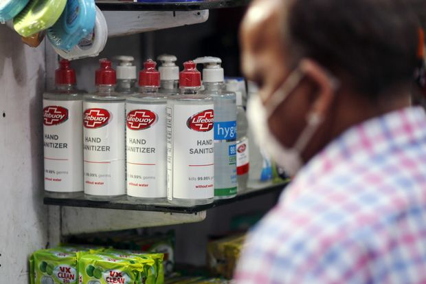 |
| 2021-05-05 06:50:00 | Markets | Lyft, Caesars, Zillow, Dogecoin: What to Watch When the Stock Market Opens Today | Technology shares were poised to recover some ground | Here’s what we’re watching before Wednesday’s trading action kicks off. |
|
| 2021-05-05 06:38:00 | Markets | Stock Futures Rise, Pointing to S&P 500 Rebounding | Tech shares are poised to recover some ground | U.S. stock futures edged higher Wednesday, pointing to a rebound in the major indexes after concerns about inflation and a rise in interest rates eased. Futures tied to the S&P 500 ticked up 0.4%. Nasdaq-100 futures edged up 0.6%, suggesting that technology shares may recover some ground a day after the index declined almost 1.9%. Stocks are poised to resume their upward trajectory Wednesday after Treasury Secretary Janet Yellen walked back earlier comments that interest rates might need to rise to keep the economy from overheating. She clarified after markets closed that she was neither predicting nor recommending that the Federal Reserve raise rates. Inflation isn’t likely to be a problem, and the Fed can handle it if it does become an issue, she said at The Wall Street Journal’s CEO Council Summit. “Today is a bit of a relief rally,” said Edward Park, chief investment officer at Brooks Macdonald. “Markets are grinding higher and they are grinding higher on a relative basis because equities remain the most attractive.” Strong earnings growth and signs that the economy is rebounding quickly are helping boost sentiment, Mr. Park said. “But there is this growing question of how long will monetary policy remain accommodative,” he added. |
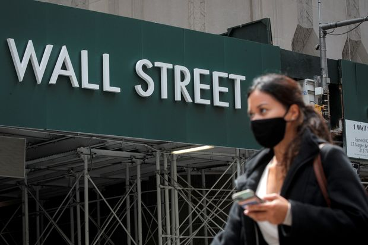 |
| 2021-05-05 06:18:00 | World | China Faces Tougher Rules on Its European Deals Spree | New EU rules would help address concerns that Chinese businesses are competing unfairly around the world | FRANKFURT—The European Union plans to unveil draft rules on Wednesday aimed at cracking down on state-subsidized foreign companies in Europe, a move that could allow regulators to pursue big Chinese companies in much the same way they have targeted U.S. multinationals such as Apple Inc. and Amazon.com Inc. The legislation is the latest sign of Europe’s shifting stance toward China, the bloc’s biggest trading partner for goods and a crucial market for its exporters. While the new rules aren’t expected to single out China, analysts said large Chinese companies would be a primary target. If approved by the EU’s 27 governments and the European Parliament, the rules would grant the bloc’s muscular antitrust authorities new powers to block foreign companies from making acquisitions in Europe or receiving public contracts if they are deemed to have benefited from government subsidies. Companies would face stiff fines if they failed to comply with the EU’s demands. “It’s a quite intrusive tool,” said European Commission Executive Vice President Margrethe Vestager, the bloc’s chief competition enforcer, at The Wall Street Journal’s CEO Council Summit on Tuesday. “It has to be, to have the sufficient deterrent effect.” The new regulation would help address rising European concerns that Chinese businesses, bolstered by state support, are competing unfairly around the world, making rock-bottom bids at public tenders and offering unbeatable premiums for acquisitions. |
|
| 2021-05-05 06:11:00 | Markets | Everything Screams Inflation | Investors are woefully unprepared for what may be a once-in-a-generation shift in the market | We could be at a generational turning point for finance. Politics, economics, international relations, demography and labor are all shifting to supporting inflation. After more than 40 years of policies that gave priority to the fight against rising prices, investor- and consumer-friendly solutions are becoming less fashionable, not only in the U.S. but in much of the world. Investors are woefully unprepared for such a shift, perhaps because such historic turning points have proven remarkably hard to spot. This may be another false alarm, and it will take many years to play out, but the evidence for a general shift is strong across five fronts. Since the global financial crisis policy makers have spent much more time worrying about inflation coming in below their targets than above. But recently they have taken decisive steps away from the targets. The Fed has adopted a new, softer target of average inflation of 2%, meaning it can overshoot for years to make up for the past decade’s misses. Furthermore, it has shifted from focusing on trying to act in advance of inflation based on its forecasts, to waiting until inflation actually arrives. With monetary policy’s effect on the economy famously having long and variable lags behind, as Milton Friedman emphasized, this raises the probability that the Fed acts too late to rein in rising inflation. Under both Janet Yellen, now Treasury secretary, and current Chairman Jerome Powell, the Fed has also emphasized what it had previously treated as a secondary target of full employment. In particular, it is focused on the benefits for marginalized workers, including minority racial groups, of running the economy hot. The flip side is that when it comes time for the Fed to slow the economy, these groups will know they are being hit first by Fed tightening—which could make it even more contentious than usual for the Fed to raise rates rapidly. |
|
| 2021-05-05 05:43:00 | World | U.S. Allies Diverge Over Labeling China’s Treatment of Uyghurs as Genocide | New Zealand’s government says designation requires rigorous assessment on basis of international law | WELLINGTON, New Zealand—China’s repression of Uyghurs is dividing U.S. allies over whether to characterize human-rights abuses against the mainly Muslim minority as genocide. New Zealand’s government blocked on Wednesday a parliamentary motion that would have labeled China’s actions genocide, illustrating the precarious balancing act facing the South Pacific country between its longstanding ties and security alliance with the U.S. and its trade ties to China. Australia has also shown a reluctance to use the term. U.S. officials have been pushing for collective action to counter Beijing as it applies more coercive measures at home and abroad. The U.S. said earlier this year that China was carrying out a genocide against Muslims in its western Xinjiang region, where evidence has emerged since 2018 of an expansive system of forced re-education and labor camps. The U.K.’s Parliament has also voted to declare China’s actions against Uyghurs genocide. China denies that any abuses are taking place in Xinjiang and says that reports of mass incarceration of Uyghurs are lies. Its embassy in New Zealand’s capital, Wellington, didn’t answer calls or respond to an emailed question. In response to previous New Zealand government statements about Xinjiang, the embassy has said New Zealand should stop interfering in China’s domestic affairs. As small economies, New Zealand and Australia are far more exposed to trade retaliation by China, the largest buyer of their exports, than the U.S. or U.K. Over the past year, China has imposed a series of import restrictions and tariffs on Australian products including barley and beef, after being angered by Australian Prime Minister Scott Morrison’s call for an international investigation into the first outbreak of Covid-19 in China. |
|
| 2021-05-05 05:30:00 | Markets | Biden’s Capital-Gains Tax Increases Would Hit Few Americans, Study Says | One proposed change could affect 62% of capital gains but fewer than 3% of taxpayers | Affluent Americans are worried about President Biden’s proposed tax changes on capital gains from stocks, bonds and other assets. But those proposals would hit a sliver of taxpayers, according to a new analysis. Financial advisers to the wealthy have been fielding calls from anxious clients since the plan was unveiled last week. Many are already deploying a range of tax-reducing strategies in anticipation of the increases, advisers told The Wall Street Journal. But key changes would likely affect only the very wealthy, according to Robert McClelland, a senior fellow at the Tax Policy Center. a joint venture between the Urban Institute and the Brookings Institution. The Biden plan would increase the top capital-gains tax rate to 43.4% from 23.8% for those earning over $1 million. Capital gains refer to profits on the sale of assets like stocks, homes or small businesses. Of taxpayers who filed Schedule D, the form for reporting capital gains and losses, only 2.7% had adjusted gross income of $1 million or more in 2018, according to Mr. McClelland’s analysis of Internal Revenue Service data. However, that group of taxpayers accounted for 62% of capital gains, Mr. McClelland said. “A small amount of people are going to end up paying it, but it could potentially affect a lot of the capital gains,” he said. |
|
| 2021-05-05 05:30:00 | Economy | Fed’s Williams Sees Need for Strong Monetary Policy Support to Ensure Recovery | The central bank’s bond buying doesn’t appear to be creating imbalances in the financial sector, the New York Fed leader says | Federal Reserve Bank of New York President John Williams said he doesn’t see signs that the central bank’s aggressive bond buying is creating financial-sector imbalances that would argue in favor of dialing back this form of economic stimulus. The Fed’s monthly purchases of $120 billion in Treasury and mortgage bonds have been an important part of monetary policy and are working as designed to help the economy recover from the coronavirus pandemic’s brutal impact, Mr. Williams told The Wall Street Journal in an interview Tuesday. “I don’t take for granted, even with the good news we’re seeing, that we’re going to get that full and robust recovery that we really want without really strong monetary policy support,” Mr. Williams said. He added that the positive impact of the bond buying in lowering long-term borrowing costs could become more important, saying, “I think the effects will even be greater in the sense of supporting strong growth over the next few years, which is exactly what we need.” Mr. Williams weighed in after a speech he gave on Monday that was upbeat about the outlook for the economy, which he said could grow by 7% this year. However, Mr. Williams also said Monday that “the data and conditions we are seeing now are not nearly enough for the FOMC to shift its monetary policy stance.” |
|
| 2021-05-05 05:30:00 | Dubious Covid-19 Shots, Fake Vaccination Certificates Proliferate on Dark Web | Scammers are exploiting growing European demand | |||
| 2021-05-05 05:30:00 | Shipping Matters | U.S. Push for Carbon-Neutral Ships Expected to Reveal Industry Divisions | The Biden administration is calling for drastic cuts in shipping emissions, but some developing nations may not be on board |  |
|
| 2021-05-05 05:30:00 | Markets | Ant’s Halted IPO Takes the Shine off China’s STAR Market | Route to a listing on Shanghai’s once-hot answer to Nasdaq has become harder, prompting some startups to favor offshore IPOs | The route to a listing on Shanghai’s once-hot STAR Market has become harder, prompting some startups to favor offshore IPOs over China’s answer to Nasdaq. The board was launched in 2019 with backing from President Xi Jinping, as a fundraising base for China’s homegrown technology champions. With a faster, more market-based process for launching and pricing initial public offerings, it has been host to dozens of hot tech IPOs. But in recent months regulators have cracked down on problematic IPOs across China. They have also put pressure on big technology companies including Jack Ma’s Ant Group Co., which postponed a blockbuster STAR listing in November, and whose speedy IPO approval is under investigation. The Shanghai Stock Exchange, the board’s parent company, terminated 37 STAR board IPO applications from January through April. That compares with three cases in the same period last year. JD Digits, the fintech unit of e-commerce company JD.com Inc . , is one high-profile company that recently withdrew its application. “Authorities were more tolerant and accepting of a diverse group of listing candidates, but now they’re more stringent in screening applicants and approving deals,” said Shen Cheng, a senior partner at AllBright Law Offices. He said failures by some early STAR listings to hit financial or operational targets had served as red flags. |
|
| 2021-05-05 05:01:00 | Economy | Resilient Services Sector Points to Global Economic Pickup, Despite Covid-19 Flare-Ups | Activity in India’s services sector continued to grow in April, even as new infections hit record highs | Service sector activity continued to revive during April, even in parts of the world such as India and Europe where extensive restrictions remain in place to contain Covid-19. The resilience of the sector underpins hopes that 2021 will see a strong rebound in global economic activity, as vaccination programs reach a larger share of the world’s population, albeit at very different rates in developed and developing economies. India is experiencing a devastating Covid-19 surge that has shattered global records for new cases. The country of about 1.3 billion people has seen infections rise by more than 1 million in the past week alone, bringing its total number of cases since the start of the pandemic to more than 18 million. The worst-hit Indian states have responded by imposing new restrictions on households and businesses. Nonetheless, a survey of purchasing managers released Wednesday indicated that activity in India’s services sector slowed during April, but didn’t decline. That marks a contrast with more extensive lockdowns a year earlier, when India saw one of the world’s sharpest declines in services activity. When combined with a similar survey of manufacturers out Monday, the survey suggests the Indian economy may still be growing, although further restrictions that may have a larger impact on economic activity are likely. |
|
| 2021-05-05 04:13:00 | Business | Chip Crisis Deepens at Jeep Maker Stellantis | Car maker cut first-quarter production by about 190,000 vehicles as semiconductor shortage dragged on | Jeep maker Stellantis NV slashed planned production by 11% in the first three months of the year due to the global chip shortage and warned of additional cuts in the weeks ahead as the crisis lingers. A lack of semiconductors resulted in a cut to planned first-quarter production of about 190,000 vehicles, the car maker said. The problem will force it to cut second-quarter production even more, but it expects the situation to improve after June. Eight of the company’s 44 plants were affected to some degree by the shortage as of Tuesday. The company’s finance chief, Richard Palmer, said Stellantis expects the issue to continue into next year, adding, “It would be naive to expect it to just disappear.” The warning came as growth in South America and Europe fueled a 14% rise in sales at Stellantis to €37 billion, equivalent to about $44.5 billion, compared with the first three months of last year, when lockdowns related to the coronavirus pandemic took their toll on sales and factory output around the world. Like its competitors, Stellantis has been scrambling to secure semiconductors used in electronic-vehicle controls as global demand for smartphones, laptops and other electronics surged during the pandemic. In one factory in France, the company reverted to analog speedometers to replace digital board instruments that require semiconductors. |
|
| 2021-05-04 19:53:00 | U.S. | Derek Chauvin Seeks New Trial in George Floyd Case | An attorney for the former Minneapolis police officer convicted of murder said a change of venue should have been granted and alleged prosecutorial and jury misconduct | MINNEAPOLIS—Derek Chauvin’s lawyer filed a motion seeking a new trial, alleging prosecutorial and jury misconduct, and saying a change of venue should have been granted. Mr. Chauvin was convicted last month of two counts of murder and one count of manslaughter for kneeling on George Floyd’s neck and back for 9 minutes and 29 seconds, while Mr. Floyd was handcuffed and lying prone in the street. Mr. Floyd’s death sparked a summer of unrest in Minneapolis and across the country. Eric Nelson, Mr. Chauvin’s attorney, requested a hearing where the judge could reinterview some jurors. He said the purpose of the questioning is to show the jury “committed misconduct, felt threatened or intimidated, felt race based pressure during the proceedings, and/or failed to adhere to instructions during deliberations, in violation of Mr. Chauvin’s constitutional rights to due process and a fair trial.” Mr. Nelson didn’t name a specific juror or explain what misconduct he is alleging in a court filing Tuesday. He asked the court to grant him more time to fully investigate the issues. Judge Peter Cahill has denied requests for a retrial at multiple points during the proceedings after Mr. Nelson said that the jury was being swayed by pressure to convict Mr. Chauvin out of fear that a failure to convict would unleash a new round of social unrest in Minneapolis. |
|
| 2021-05-04 19:36:00 | U.S. | Prosecutors Seek Outside Review of Materials Seized From Rudy Giuliani | Attorney-client privilege concerns cited in letter to Manhattan federal judge | Manhattan federal prosecutors have asked a judge to appoint an outside authority known as a “special master” to oversee a review of materials seized by FBI agents last week from Rudy Giuliani in their investigation into his work in Ukraine. Manhattan federal prosecutors said their request, unsealed Tuesday in federal court, stems from concerns about attorney-client privilege. Mr. Giuliani’s legal team has criticized the dawn search of his apartment and office as unconstitutional and a breach of attorney-client privilege. Legal experts noted that the search was an unusual step for prosecutors to take, particularly because Mr. Giuliani has served as the personal lawyer of former President Donald Trump. “[U]nder exceptional circumstances, the appointment of a special master to review materials seized from an attorney may be appropriate,” the prosecutors wrote. “Those circumstances may exist where the search involves the files of a criminal defense attorney with cases adverse” to the prosecutors’ office. The three assistant U.S. attorneys on the letter are part of the office’s public corruption unit and are also the prosecutors on the campaign-finance case involving several of Mr. Giuliani’s associates. The letter—which said a grand-jury investigation was under way—was written to U.S. District Judge J. Paul Oetken, who is also overseeing that case. |
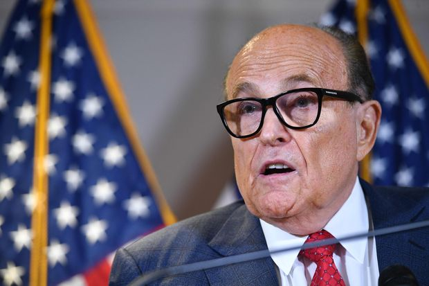 |
| 2021-05-04 19:34:00 | Business | Despite Divorce, Bill and Melinda Gates to Remain Co-Chairs, Trustees of Their Foundation | The philanthropists plan to continue working together to steer charitable organization | Bill and Melinda Gates have transformed the world’s fight against poverty, inequity and disease over more than two decades as philanthropists, using their enormous wealth and influence to shape policies and drive innovation in global health, agricultural development, gender equality and American education. Now the impending divorce of one of the world’s most high-profile couples puts into question the future of the Bill & Melinda Gates Foundation, the philanthropy they lead together. Ms. Gates filed a petition for divorce in King County, Wash., on Monday, calling her marriage to Mr. Gates “irretrievably broken” and asking the court to dissolve it. The Gates Foundation is one of the world’s wealthiest philanthropies, with a $49.8 billion endowment in 2019, the latest year available. Mr. and Ms. Gates gave $36.8 billion to the organization between 1994 and 2020, according to the foundation. Mr. and Ms. Gates said in a statement posted simultaneously to their Twitter accounts on Monday that they would continue to work together at their foundation. “We continue to share a belief in that mission,” they said. No changes in their roles or the organization are planned, a foundation spokesperson said. The couple will remain co-chairs and trustees of the foundation and will work jointly to shape and approve its strategies and overall direction, the spokesperson said. |
|
| 2021-05-04 18:51:00 | Opinion | Joe Biden’s Hits and Misses After 100 Days | Students discuss the president’s most noteworthy actions in office. | Editor’s note: This week’s Future View is about President Biden’s first 100 days in office. Next week we’ll ask, “Does ‘equity’ demand the elimination of gifted-and-talented programs in schools?” The argument has been made most recently within New York City’s Department of Education. Students can click here to submit opinions of fewer than 250 words before May 11. The best responses will be published that night. Intimidating the Court On his 80th day in office, President Biden advertised his worst tendencies. He empaneled a Presidential Commission on the Supreme Court to make “an appraisal of the merits and legality of particular reform proposals,” most notoriously what is termed “court packing.” While expanding the Supreme Court would delegitimize the institution—the last rational federal institution in the U.S.—the existence of the commission is itself a way to intimidate the current Supreme Court justices. How might jurists who esteem their court, who value its history and integrity, respond to the credible threat of debasement by the executive? Consider the history of court packing under Franklin Roosevelt. When the Supreme Court in the 1930s deemed several pieces of New Deal legislation unconstitutional, President Roosevelt attempted to “vitalize” the court with younger, like-minded justices. This initiative failed due to a few men of integrity within Roosevelt’s own party, but the message was received. Roosevelt secured a much friendlier Supreme Court thereafter. |
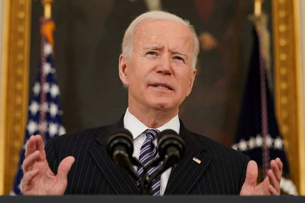 |
| 2021-05-04 18:49:00 | Opinion | The Centers for Politics and Unions | American Federation of Teachers chief Randi Weingarten gets the CDC to change its school opening guidance. | The Centers for Disease Control and Prevention has had a bad pandemic, and it’s getting worse. The outfit that is supposed to offer credible, unbiased scientific guidance has been found again to be politicizing virus policy. The New York Post reported over the weekend that the CDC consulted American Federation of Teachers (AFT) chief Randi Weingarten in writing its guidelines for school openings. The chronology of this non-scientific political intervention is even worse than it sounds. In early February, new CDC Director Rochelle Walensky told reporters in a press conference that “schools can safely reopen and that safe reopening does not suggest that teachers need to be vaccinated.” Oops. She forgot to consult the expert opinion of Ms. Weingarten, a major supporter of President Biden. After unions howled, White House press secretary Jen Psaki said Dr. Walensky was speaking in her “personal capacity,” not providing “official guidance” from the CDC. A couple of weeks later, the CDC rolled out official school reopening guidelines that recommended teachers be given “high priority” for vaccines and curiously echoed other union demands. Now we know why. Emails obtained by the New York Post showed that the AFT union reviewed a CDC draft and made recommendations that union officials said would “strengthen the document.” The CDC adopted two of the union’s suggestions nearly verbatim. |
|
| 2021-05-04 18:47:00 | Opinion | Montana to Feds: No More No-Work Bonus | The Treasure State will refuse extra federal jobless payments. | The economy is roaring back as government lockdowns finally end, and employers are struggling to find workers. Enter Montana with a novel idea: telling the feds that it doesn’t want their extra payments for not working. On Tuesday Gov. Greg Gianforte said that by June 27 Montana will end its participation in the federal supplemental unemployment benefit program that provides the jobless with an additional $300 a week through September. Congress enacted the bonus in its Covid legislation, but Mr. Gianforte believes it has become a disincentive to work. So do most economists. Montana already offers a maximum individual unemployment benefit of $572 a week, and with the federal bonus the jobless can collect the equivalent of up to $21.80 an hour for doing nothing. With state and federal benefits combined, about half of Montana’s workers make more than their prior earnings while on unemployment, says University of Chicago economist Peter Ganong. State Commissioner of Labor and Industry Laurie Esau estimates that Montana’s labor force is down some 10,000 workers from pre-pandemic levels. Nearly 25,250 Montanans collected unemployment this week, but the state’s jobs website reports more than 14,000 open positions. In March Montana’s unemployment rate was 3.8%. Montana also plans to issue regulations strengthening requirements so those collecting unemployment checks must show that they are able and available to work and actively looking for a job. |
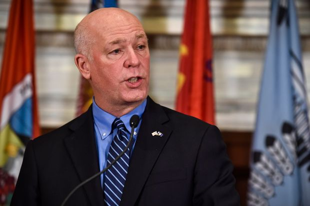 |
| 2021-05-04 18:47:00 | CFO Journal | Ripple Names New CFO as Cryptocurrency Firm Faces SEC Lawsuit | Kristina Campbell will serve as finance chief of the startup as it deals with a legal challenge from U.S. securities regulators | ||
| 2021-05-04 18:44:00 | Opinion | Purging Liz Cheney | GOP leaders shouldn’t have to lie about 2020 to keep their job. | This should be a hopeful moment for House Republicans. While they’re playing defense in the minority for now, their prospects for picking up the five net seats they need to regain the majority in 2022 are excellent. That is, unless they devolve into internal brawling over the 2020 election. Yet that’s precisely what they seem to be doing as some Members try to oust Wyoming Rep. Liz Cheney from the GOP House leadership. Ms. Cheney easily survived an earlier effort to dump her, 145-61, after she was one of 10 House Republicans to vote to impeach Donald Trump after the events of Jan. 6. But she continues to rankle some in the GOP House conference by refusing to go along with Mr. Trump’s demand that Republicans agree that the 2020 election was stolen. On Monday Mr. Trump issued a statement that “The Fraudulent Presidential Election of 2020 will be, from this day forth, known as THE BIG LIE!” Ms. Cheney responded on Twitter : “The 2020 presidential election was not stolen. Anyone who claims it was is spreading THE BIG LIE, turning their back on the rule of law, and poisoning our democratic system.” This has angered some in the House GOP, and on Tuesday Axios caught House Minority Leader Kevin McCarthy on a hot mic saying “I’ve had it with her.” But Mr. McCarthy knows Ms. Cheney is right. The election wasn't stolen, yet Mr. Trump wants an endorsement of his stolen claim to be a litmus test for every Republican candidate. He’s the one who wants to refight his losing campaign. |
 |
| 2021-05-04 18:40:00 | Opinion | The FBI’s Dubious Briefing | Did the bureau set up two GOP Senators at the behest of Democrats? | Did the FBI set up two Members of Congress for political attack under the guise of a “defensive briefing”? It’s possible, and Senators Ron Johnson and Chuck Grassley are rightly demanding answers. On Monday the Republicans sent a letter to FBI Director Christopher Wray and Director of National Intelligence Avril Haines asking how the Washington Post came to know about an FBI briefing to both Senators on Aug. 6, 2020. A Post story last week used the info to smear Mr. Johnson and his report on Hunter Biden’s foreign business dealings, suggesting that he’d ignored FBI warnings and thus may have been manipulated by the Kremlin. The newspaper cited only anonymous “current and former U.S. officials.” In their letter the Senators note that the briefing came after “pressure from Democratic Leadership.” In July 2020, the Democratic Members of the Gang of Eight—senior Members with access to intelligence secrets—had sent a letter and classified addendum to Mr. Wray specifically citing the Johnson-Grassley probe into Hunter Biden as reason for an urgent briefing for Congress about foreign “disinformation.” That news was then leaked, in what was an obvious attempt to tar the work of the two Republicans. The two Senators became more concerned when the ensuing briefing by the FBI turned out to be what they described as “not specific” as well as “unconnected to our investigation.” (Their report was based on U.S. government documents.) They specifically expressed to the FBI during the briefing their concerns that it would be “subject to a leak” for partisan gain. Which is exactly what happened last week, despite the FBI’s promise to the Senators of confidentiality. After the August briefing, Messrs. Johnson and Grassley sent a letter demanding that Mr. Wray and the intelligence community disclose the reason for it. They never received the answer. In light of last week’s leak, they are renewing their demand to know who recommended the briefing, and the intelligence that supposedly supported it. |
|
| 2021-05-04 18:36:00 | Opinion | Austin Loses Patience With Camping in the Streets | Liberal voters rebuke leftist politicians for a policy that brought homeless encampments to the city’s public spaces. | Austin, Texas Voters in this deeply liberal city overwhelmingly approved a proposal last week to reinstate a ban on camping in public places, dealing a harsh rebuke to Mayor Steve Adler and his fellow Democrats. It turns out there’s a limit to what even the most progressive electorate will tolerate. The vote came amid a homelessness crisis in the city caused almost entirely by Mr. Adler and the Austin City Council’s 2019 decision to rescind a 23-year-old ordinance that prohibited camping in public places such as sidewalks, city parks and highway medians, as well as ordinances against panhandling and sitting or lying down in public. The predictable result was the emergence of San Francisco-style homeless encampments all over the city, especially downtown, which was soon inundated with aggressive panhandling, public intoxication and debris-strewn tent cities. At the time, Mr. Adler said the answer to Austin’s homelessness problem wasn’t to arrest people for sleeping on the streets, an approach he called “ineffective and inconsistent with the character of this city.” He offered more publicly funded housing and services for the homeless, following the “Housing First” policy mantra of West Coast cities like San Francisco, Los Angeles and Seattle. “We need places where homeless folks can be safe and surrounded by social workers and others getting them the help and support they need,” Mr. Adler said. And he meant it. Along with the repeal of the camping ban, Mr. Adler and the all-Democrat city council appropriated more than $73 million for homeless-related services in 2020, a record for the city. It was so much money that the city had trouble spending it. By December Austin had doled out only 57%, or $42.3 million, which still amounted to tens of thousands of dollars per homeless person. Yet the problem kept getting worse. |
|
| 2021-05-04 18:32:00 | Opinion | Biden Wants Higher Taxes Than China’s | How can a communist country treat capital gains more favorably than the U.S. does? | The concept driving President Biden’s tax proposals for individuals is that the long-term capital gains and dividends of wealthy investors should be taxed as ordinary income. If the concept becomes law, the U.S. will have hamstrung itself economically by impairing a key engine of growth—the individual risk-taking needed to start companies and create jobs. The current top rate on long-term capital gains is 23.8%: 20% plus the 3.8% investment-income surtax. Mr. Biden proposes to push the top rate to 39.6% plus the 3.8% surtax, for a total of 43.4% In the business and financial world it is generally understood that long-term capital gains are different from ordinary income and thus should be taxed differently and at lower rates. Long-term capital gains can be heavily eroded by inflation. Lower capital-gains tax rates reward the patient capital needed to create and build business. Also, net capital losses are generally not deductible from taxable income. So if government isn’t willing to share fully in the losses from risky economic investing, it shouldn’t take a large part of any net gains. Capital is mobile, so the issue must be considered globally. Looking at the world’s 10 largest economies, not one currently taxes individual long-term capital gains at or close to ordinary income rates. The most critical comparison is between the U.S. and China, which has adopted key Western investment policies and made no secret of its desire to become the world’s leading economy. Mr. Biden has acknowledged this, calling Beijing’s intentions to displace U.S. global leadership “deadly earnest.” The top capital-gains tax rate for Chinese investors is 20%. Chinese citizens are allowed—even encouraged—to buy and own stocks in Chinese companies. They can invest and become wealthy as long as they don’t challenge the Chinese Communist Party. The Chinese model, a political dictatorship, a market economy, and low taxes for investors, continues to generate rapid economic gains. |
|
| 2021-05-04 18:31:00 | Opinion | Notable & Quotable: Yellen’s Fiscal-Flip Flop | ‘The switch from chronic and growing deficits in the federal budget to surpluses has boosted national saving, cut interest rates, and spurred private investment.’ | Future Treasury Secretary Janet Yellen writing in a symposium for the September/October 1999 issue of the International Economy: During the past four years, productivity in the nonfarm sector has grown at a remarkable 2.0 percent pace, up sharply from its 1.2 percent rate (adjusted for methodology changes) over the previous four years. The implications have already been far reaching, helping to suppress inflation, boost profits, and sustain solid gains in real wages after nine years of stagnation. . . . One factor which accounts for part of the productivity surge is the investment boom which has driven the latter part of the expansion, the consequence of an historic shift in the stance of fiscal policy. The switch from chronic and growing deficits in the federal budget to surpluses has boosted national saving, cut interest rates, and spurred private investment. . . . Only time will tell if recent productivity trends can [be] sustained. We can improve the odds by maintaining the fiscal discipline which is responsible for our investment boom. |
|
| 2021-05-04 18:26:00 | Opinion | The Left vs. the Biden Jobs Boom | The economy may be golden for Democrats if they can keep their activists distracted. | A job is the best kind of social policy not only for somebody who’s now working and has an income, but for neighbors, community and family. It’s a claim Democrats aren’t embarrassed to make when one of their own is presiding over the sort of job market we’re starting to enjoy, in which employers make attractive offers to people without skills or experience or credentials, or who have a checkered criminal history. “The best anti-poverty program is a job,” tweeted Barack Obama to mark a particularly good monthly report in May 2015. “The great economic boom of the 1990s lifted the fortunes of almost every disadvantaged group, including racial minorities, high school dropouts and single mothers,” jubilated the Los Angeles Times in the late Clinton years. “America Is ‘Fully Employed,’ But Some Still Need Jobs,” snarked the New York Times at the same stage of the Reagan boom. A job may not be a solution for somebody who can’t work or can’t find a job, or who has behavioral problems or is disabled, but hiring binges are engines of social amelioration. We’re on the cusp of such a boom now, or perhaps reacquainting ourselves with the Trump boom. Fifteen million job vacancies were begging by late March, five million more than before the pandemic. A McDonald’s franchisee in Tampa is offering $50 to entice prospective workers to schedule an interview. |
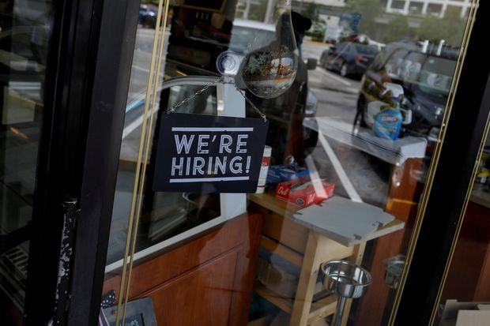 |
| 2021-05-04 18:22:00 | Books | ‘Lincoln in Private’ Review: Confidential Ruminations | In his private writings, Lincoln tested his arguments, and perfected their phrasing, before making them public. | Abraham Lincoln stands among the foremost lyricists of the American experience. His first inaugural address called on a divided citizenry’s “better angels” to uphold the sacred inviolability of the Union. His Gettysburg Address envisioned a nation baptized by the blood of battle into “a new birth of freedom.” And his second inaugural meditated on a just God chastening a republic of liberty that tolerated slavery. How did Lincoln arrive at these arresting ideas and phrases? As far as we know, he didn’t leave a personal diary to posterity. But he did bequeath 109 surviving fragments or notes that feature what he called his “best” (though often “disconnected”) thoughts. In scrawled penmanship, Lincoln explored a range of subjects: the mysteries of nature, a lawyer’s public reputation, the immorality of slavery, the active role of God in human affairs. These notes—some no more than a few sentences, others multiple paragraphs—were not, according to Lincoln’s personal secretaries, John Nicolay and John Hay, “written to be seen by men.” Lincoln’s confidential ruminations are the subject of Ronald C. White’s “Lincoln in Private,” an intimate character portrait and fascinating inquiry into the basis of Lincoln’s energetic, curious mind. Mr. White, whose masterly biography of Lincoln appeared in 2009, regards Lincoln’s notes as the “building blocks” of his political philosophy and of his sense of self. “The function of Lincoln’s fragments”—all of which are reprinted in the book—“is for him to write in private what he may not yet be willing to say in public.” Lincoln cherished careful, authoritative rhetoric. He used his private jottings to confront problems, establish propositions, exercise the limits of his arguments and anticipate critics’ rejoinders—all before announcing his public positions. He wrote to himself as both a meditative thinker and as a careful practitioner who searched for the precise word or phrase and who often set rigid standards for himself. The “leading rule” for all aspiring professionals, the lawyer Lincoln recorded in 1850, “is diligence. Leave nothing for tomorrow which can be done today.” To fulfill an ambitious life was “to be honest at all events.” We see in Lincoln’s fragments a poised and resolute intellectual. We also see a vulnerable individual humbled by the precariousness of the nation and of its vast, uncertain future. When Illinois Sen. Stephen A. Douglas’s 1854 Kansas-Nebraska Act granted citizens the right to decide for themselves the fate of slavery in the western territories, Lincoln retreated to his private thoughts to work through the inconsistencies of Douglas’s “popular sovereignty.” “If A. can prove, however conclusively, that he may, of right, enslave B.,” Lincoln wrote to himself, “why may not B. snatch the same argument, and prove equally, that he may enslave A.?” Put another way, was democracy moral when a political majority curtailed the natural rights of another people who themselves were deprived of electoral consent? Lincoln’s resounding “no” to this question informed his Peoria speech (1854) and his debates with Douglas in 1858, fueling his rise in the Republican Party. |